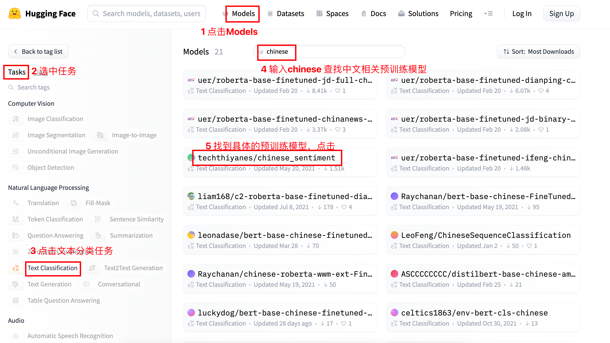
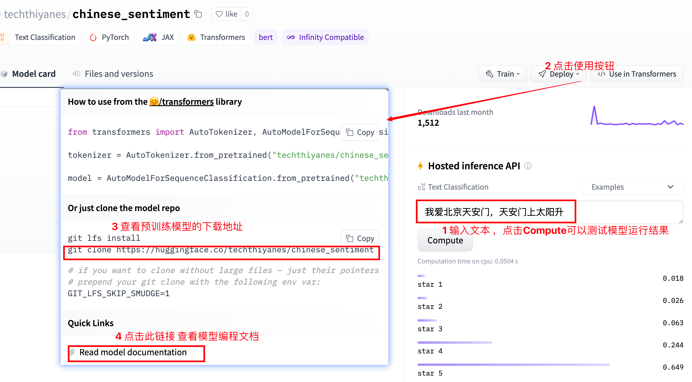
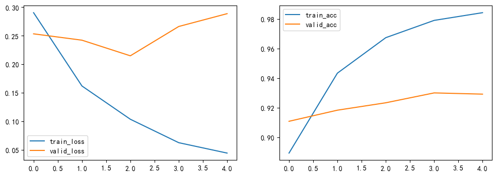
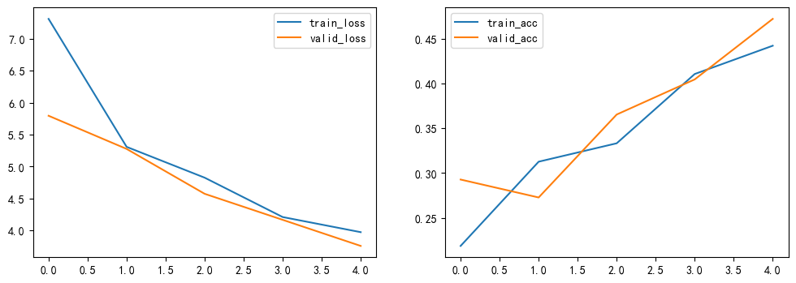
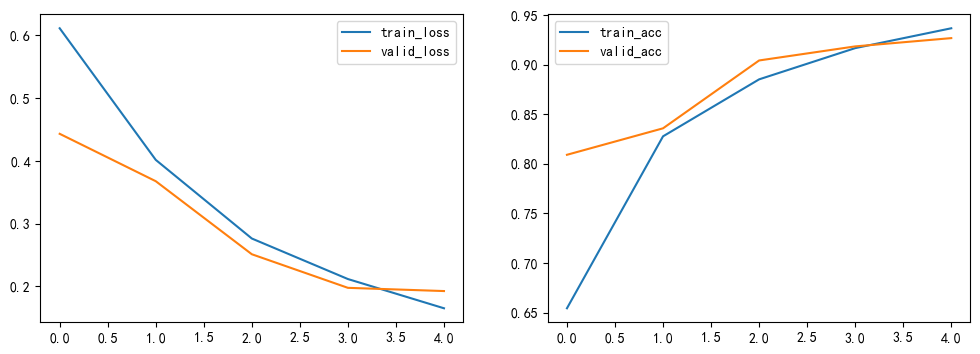

🤗 Transformers 迁移学习与中文任务
import torch import matplotlib.pyplot as plt # 设置中文字体 plt.rcParams['font.sans-serif'] = ['SimHei'] # 微软雅黑 plt.rcParams['axes.unicode_minus'] = False # 解决负号显示问题 # 设置设备，优先使用顺序：GPU > MPS > CPU DEVICE = torch.device( "cuda" if torch.cuda.is_available() else "mps" if torch.backends.mps.is_available() else "cpu" ) print(f"当前设备：{DEVICE}")
当前设备：cuda
1 迁移学习概念
1.1 学习目标
- 了解 迁移学习中的核心概念
- 掌握迁移学习的两种主要方式
1.2 迁移学习的核心概念
迁移学习是利用预训练模型来完成特定任务的一种方法，主要涉及预训练模型和微调。
预训练模型（Pretrained Model）
预训练模型是指在大规模数据集上预先训练好的模型。在 NLP 领域，预训练模型通常是语言模型，如 BERT、GPT、RoBERTa、Transformer-XL 等。
这些模型能够学习通用的语言表示，为下游任务提供强大的特征基础，如机器翻译，文本生成，阅读理解等。
微调（Fine-tuning）
微调是指在预训练模型的基础上，改变它的部分参数或者为其新增部分输出结构后，利用少量标注数据继续训练模型，使模型更好地适应特定任务。
1.3 迁移学习的两种方式
- 直接使用预训练模型
- 不更新模型参数
- 直接使用已有表示
- 典型示例：FastText 预训练词向量
- 基于微调的迁移学习(重点)
- 在预训练模型基础上继续训练
- 更新部分或全部模型参数
- 是当前 NLP 中最主流的迁移方式
2 NLP常用预训练模型
学习目标
- 了解主流NLP预训练模型
- 掌握加载和使用预训练模型的方法
2.1 主流NLP预训练模型
- BERT：双向编码器，适合文本理解
- GPT / GPT-2：解码器，生成式模型，适合文本生成
- RoBERTa：BERT改进版，训练更充分
- DistilBERT：BERT的轻量级版本
- ALBERT：参数共享，模型更小
- Transformer-XL：长文本建模能力强
- XLNet：结合自回归和自编码优点
- XLM / XLM-RoBERTa：多语言支持
- T5：统一文本任务为生成问题
常见模型参数对比
| 模型家族 | 模型名称 | 层数 | 特征维度 | 注意力头数 | 参数量 | 训练语料 / 特点 | 典型应用场景 |
|---|---|---|---|---|---|---|---|
| BERT | bert-base-uncased | 12 | 768 | 12 | ≈110M | 英文，不区分大小写 | 文本分类、情感分析、NER |
| BERT | bert-large-uncased | 24 | 1024 | 16 | ≈340M | 英文，不区分大小写 | 高精度文本理解任务 |
| BERT | bert-base-multilingual-uncased | 12 | 768 | 12 | ≈110M | 多语言，不区分大小写 | 多语言分类、跨语种任务 |
| BERT | bert-base-chinese | 12 | 768 | 12 | ≈110M | 中文字级 | 中文分类、NER、匹配 |
| GPT | openai-gpt | 12 | 768 | 12 | ≈110M | 英文，自回归 | 文本生成、语言建模 |
| GPT-2 | gpt2 | 12 | 768 | 12 | ≈117M | 英文 GPT-2 语料 | 对话生成、续写 |
| GPT-2 | gpt2-xl | 48 | 1600 | 25 | ≈1558M | 大规模语料 | 高质量文本生成 |
| Transformer-XL | transfo-xl-wt103 | 18 | 1024 | 16 | ≈257M | 长文本建模 | 长文档建模、语言模型 |
| XLNet | xlnet-base-cased | 12 | 768 | 12 | ≈110M | 排列语言模型 | 文本理解、分类 |
| XLNet | xlnet-large-cased | 24 | 1024 | 16 | ≈340M | 大模型 | 高精度理解任务 |
| XLM | xlm-mlm-en-2048 | 12 | 2048 | 16 | ≈570M | 多语言框架 | 跨语言迁移学习 |
| RoBERTa | roberta-base | 12 | 768 | 12 | ≈125M | BERT 改进版 | 文本分类、匹配 |
| RoBERTa | roberta-large | 24 | 1024 | 16 | ≈355M | 更大规模训练 | 高精度 NLP 任务 |
| DistilBERT | distilbert-base-uncased | 6 | 768 | 12 | ≈66M | 蒸馏模型 | 轻量级文本分类 |
| ALBERT | albert-base-v1 | 12 | 768 | 12 | ≈12M | 参数共享 | 资源受限场景 |
| ALBERT | albert-base-v2 | 12 | 768 | 12 | ≈12M | 改进训练策略 | 高效理解任务 |
| T5 | t5-small | 6 | 512 | 8 | ≈60M | 文本到文本 | 文本生成、摘要 |
| T5 | t5-base | 12 | 768 | 12 | ≈220M | Encoder-Decoder | 翻译、问答 |
| T5 | t5-large | 24 | 1024 | 16 | ≈770M | 大模型 | 高质量生成任务 |
| XLM-R | xlm-roberta-base | 12 | 768 | 12 | ≈125M | 大规模多语言 | 多语言分类、NER |
| XLM-R | xlm-roberta-large | 24 | 1024 | 16 | ≈355M | 多语言大模型 | 跨语种高精度任务 |
- 以上模型均基于Transformer架构，主要区别在于结构细节和训练数据。
2.2 如何选择预训练模型
-
看任务类型
- 文本理解任务：优先考虑 BERT、RoBERTa、XLNet
- 文本生成任务：优先考虑 GPT、T5
- 多语言任务：优先考虑 XLM、XLM-R
-
看资源条件
- 显存和算力充足：可选大模型
- 资源有限：优先选 DistilBERT、ALBERT
-
看效果与速度平衡
- 追求效果：选择更强的基础模型
- 追求部署速度：选择轻量模型
2.3 小结
- 主流NLP模型包括BERT、GPT、RoBERTa、XLNet、T5等。
- 理解类任务 常用 BERT 类模型，生成类任务 常用 GPT / T5
- 掌握主流模型的加载和使用，是NLP岗位的核心技能。
3 Transformers库使用
学习目标
- 了解并掌握管道方式完成基本NLP任务
- 了解并掌握自动模型方式完成基本NLP任务
- 了解并掌握具体模型方式完成基本NLP任务
3.1 了解Transformers库
- HuggingFace介绍：HuggingFace 是一家专注于 NLP 与 AI 工具开发的开源社区，提供海量预训练模型、数据集、教程。HuggingFace官网(https://huggingface.co/)，HF-mirror(https://hf-mirror.com/models)
-
- Models：浏览、下载预训练模型
-
- Datasets：获取公开数据集
-
- Docs：官方使用文档与代码示例
-
Transformers 是 HuggingFace 推出的Transformer 架构预训练模型库：
- 支持 Pytorch，Tensorflow2.0(支持两个框架的相互转换)。
- 预训练模型库 transformers[https://github.com/huggingface/transformers.git] 提供了NLP领域大量先进的 预训练语言模型，被下载超过1000k次，github上超过150k个star。
- 支持快速调用模型、继续预训练、下游任务微调。预训练模型有 BERT, GPT-2, RoBERTa, XLM, DistilBert, XLNet, CTRL 等。
3.2 Transformers库三层应用结构
| 应用层 | 说明 | 特点 |
|---|---|---|
| 管道（Pipeline） | 高度集成的极简使用方式，几行代码即可实现一个 NLP 任务。 | 上手最快，适合快速验证与教学演示。 |
| 自动模型（AutoModel） | 自动匹配模型结构，通用简洁，支持 BERT/GPT/T5 等主流模型。 | 灵活性与易用性平衡，适合大多数开发场景。 |
| 具体模型（SpecificModel） | 需要手动指定具体模型和参数。 | 配置更复杂，但可控性最高，适合深度定制。 |
3.3 安装transformers库
方法1：pip安装
pip install transformers datasets
方法2：github源码安装
安装git: https://git-scm.com/install/windows
# 4 注意在执行clone之前，要查看当前是在那个目录下，比如$HOME/nlpdev/目录下 # 5 克隆huggingface的transfomers文件 git clone https://github.com/huggingface/transformers.git # 6 进入transformers文件夹 cd transformers # 7 切换transformers到指定版本 git checkout v4.19.0 # 8 安装transformers包 pip install . pip install datasets
transformers库中预训练模型查找和下载-使用huggingface官网


3.4 常见NLP任务
| 任务 | 核心说明 | 输出形式 / 备注 |
|---|---|---|
| 文本分类任务 | 对文本内容进行类别判断，如情感分类、商品分类。通常属于有监督学习。 | 输出类别标签（及其概率），结果依赖训练样本标签。 |
| 特征提取任务 | 返回文本的向量表示（语义特征），常作为下游任务输入。 | 可分为： 1) 不带任务头：输出隐藏层特征； 2) 带任务头：按具体任务输出（如分类/填空）。 |
| 完形填空任务 | 又称遮蔽语言建模（MLM），预测被 [MASK] 遮蔽位置的词。 |
输出被遮蔽位置的候选词及概率。 |
| 阅读理解任务 | 又称抽取式问答：输入“上下文+问题”，模型从上下文中抽取答案。 | 输出答案文本（通常附带起止位置或置信度）。 |
| 文本摘要任务 | 输入一段较长文本，生成简短概括内容。 | 输出摘要文本（可为抽取式或生成式）。 |
| NER 任务 | 命名实体识别，识别人名（PER）、地名（LOC）、组织（ORG）等。 | 本质是序列标注/分类任务，常用 BIO 标注：B-（实体开始）、I-（实体内部）、O（非实体）。 |
3.5 管道方式完成多种NLP任务
""" 演示 huggingface 的 transformers库 如何使用pipeline来实现常见的NLP任务， 包括 文本分类，特征提取，完形填空，阅读理解(问答任务)，文本摘要，NER命名实体识别 需要准备的工作： 1.安装transformers datasets, pip install transformers datasets 2.复制预训练的模型文件到自己电脑 3.复制数据文件 需要掌握的: # 1.实例化pipeline对象 my_pipeline = pipeline( task=task, # 任务类型 model=model, # 模型路径 or 模型名称(重新下载) framework="pt", # 模型框架, pt-pytorch, tf-tensorflow ) # 2.送入文本text进行处理 result = my_pipeline(text, **kwargs) """ # 导包 import torch from transformers import pipeline # pipeline方法，提供各种预训练模型的pipeline使用方式 # 1.定义函数，实现transformers的pipeline方法 def demo_pipeline(task, model, text=None, **kwargs): """ 这个函数实现transformers的pipeline方法，来完成各种NLP任务： 文本分类，特征提取，完形填空，阅读理解(问答任务)，文本摘要，NER命名实体识别 :param task: 任务类型，比如 sentiment-analysis, feature-extraction, fill-mask, question-answering, summarization :param model: 模型路径 or 模型名称(重新下载) :param text: 输入文本 或 数据 :param kwargs: 其他参数 :return: 模型输出结果 """ # 1.实例化pipeline对象 my_pipeline = pipeline( task=task, # 任务类型 model=model, # 模型路径 or 模型名称(重新下载) # framework="pt", # 模型框架, pt-pytorch, tf-tensorflow ) # 2.送入文本text进行处理 # transformer 5.x需要判断是否传入text if text: result = my_pipeline(text, **kwargs) else: result = my_pipeline(**kwargs) # 3.返回输出结果 print(result) return result # 测试 if __name__ == '__main__': # 1.情感分类/分析任务，判断文本是好评/差评，model/chinese_sentiment # 下载方法：在命令行执行以下命令将模型下载到指定目录 # git clone https://huggingface.co/techthiyanes/chinese_sentiment <本地路径> result = demo_pipeline( task="sentiment-analysis", # 任务类型 model=r"model/chinese_sentiment", # 模型路径 or 模型名称(重新下载) text="十一唱的真好，下次别唱了", ) print("-"*40) # 2.特征提取任务，获取文本特征向量，model/bert-base-chinese # 下载方法：git clone https://huggingface.co/google-bert/bert-base-chinese result = demo_pipeline( task="feature-extraction", # 任务类型 model=r"model/bert-base-chinese", # 模型路径 or 模型名称(重新下载) text="是我对你承诺了太多，还是我给的永远都不够" ) print(torch.tensor(result).shape) # BERT模型开头添加CLS,结尾添加SEP print("-"*40) # 3.完形填空任务，预测[MASK]位置的词，model/chinese-bert-wwm # 下载方法：git clone https://huggingface.co/hfl/chinese-bert-wwm result = demo_pipeline( task="fill-mask", # 任务类型 model=r"model/chinese-bert-wwm", # 模型路径 or 模型名称(重新下载) text="停车[MASK]爱枫林晚，霜叶红于二月花" ) print("-"*40) # 4.阅读理解任务，问答任务，model/chinese_pretrain_mrc_roberta_wwm_ext_large # 下载方法：git clone https://huggingface.co/luhua/chinese_pretrain_mrc_roberta_wwm_ext_large result = demo_pipeline( task="question-answering", # 任务类型，问-答任务 model=r"model/chinese_pretrain_mrc_roberta_wwm_ext_large", # 模型路径 or 模型名称(重新下载) # text={ # "context":[ # "孙悟空在蟠桃园吃桃子", # "孙悟空在蟠桃园吃桃子,看到七仙女端着盘子过来", # "孙悟空在蟠桃园吃桃子,看到七仙女端着盘子过来,然后把七仙女定住,之后拿走了七仙女的桃子", # ], # "question":[ # "孙悟空在哪里吃桃子", # "孙悟空看到七仙女端着什么", # "孙悟空拿走了七仙女的什么", # ] # } context=[ "孙悟空在蟠桃园吃桃子", "孙悟空在蟠桃园吃桃子，看到七仙女端着盘子过来", "孙悟空在蟠桃园吃桃子，看到七仙女端着盘子过来，然后把七仙女定住，之后拿走了七仙女的桃子", ], question=[ "孙悟空在哪里吃桃子", "孙悟空看到七仙女端着什么", "孙悟空拿走了七仙女的什么", ] ) print("-"*40) # 5.生成摘要任务, model/distilbart-cnn-12-6 # 下载模型 git clone https://huggingface.co/sshleifer/distilbart-cnn-12-6 result = demo_pipeline( task="summarization", # 生成摘要任务 model=r"model/distilbart-cnn-12-6", # 模型路径 or 模型名称(重新下载) text=( "BERT is a transformers model pretrained on a large corpus of English data " "in a self-supervised fashion. This means it was pretrained on the raw texts " "only, with no humans labelling them in any way (which is why it can use lots " "of publicly available data) with an automatic process to generate inputs and " "labels from those texts." ) ) print("-"*40) # 6.NER任务，命名实体识别,model/roberta-base-finetuned-cluener2020-chinese # 下载方法：git clone https://huggingface.co/uer/roberta-base-finetuned-cluener2020-chinese result = demo_pipeline( task="ner", # 命名实体识别任务 model=r"model/roberta-base-finetuned-cluener2020-chinese", # 模型路径 or 模型名称(重新下载) text="我叫胡欢，在清华大学读博士，毕业以后留在了人工智能学院当教授，现在有个对象，是北大的" ) print("-"*40)
<本地用户目录>\.conda\envs\nlp_project\lib\site-packages\tqdm\auto.py:21: TqdmWarning: IProgress not found. Please update jupyter and ipywidgets. See https://ipywidgets.readthedocs.io/en/stable/user_install.html
from .autonotebook import tqdm as notebook_tqdm
WARNING:tensorflow:From <本地用户目录>\.conda\envs\nlp_project\lib\site-packages\tf_keras\src\losses.py:2976: The name tf.losses.sparse_softmax_cross_entropy is deprecated. Please use tf.compat.v1.losses.sparse_softmax_cross_entropy instead.
Device set to use cuda:0
Device set to use cuda:0
[{'label': 'star 2', 'score': 0.36535459756851196}]
----------------------------------------
[运行输出已截断：此处为高维张量的大量数值，请重点检查张量形状与语义。]
torch.Size([1, 22, 768])
----------------------------------------
Some weights of the model checkpoint at model/chinese-bert-wwm were not used when initializing BertForMaskedLM: ['bert.pooler.dense.bias', 'bert.pooler.dense.weight', 'cls.seq_relationship.bias', 'cls.seq_relationship.weight']
- This IS expected if you are initializing BertForMaskedLM from the checkpoint of a model trained on another task or with another architecture (e.g. initializing a BertForSequenceClassification model from a BertForPreTraining model).
- This IS NOT expected if you are initializing BertForMaskedLM from the checkpoint of a model that you expect to be exactly identical (initializing a BertForSequenceClassification model from a BertForSequenceClassification model).
Device set to use cuda:0
[{'score': 0.07385518401861191, 'token': 3297, 'token_str': '最', 'sequence': '停 车 最 爱 枫 林 晚 ， 霜 叶 红 于 二 月 花'}, {'score': 0.049180567264556885, 'token': 679, 'token_str': '不', 'sequence': '停 车 不 爱 枫 林 晚 ， 霜 叶 红 于 二 月 花'}, {'score': 0.028912093490362167, 'token': 4685, 'token_str': '相', 'sequence': '停 车 相 爱 枫 林 晚 ， 霜 叶 红 于 二 月 花'}, {'score': 0.025645101442933083, 'token': 974, 'token_str': '偏', 'sequence': '停 车 偏 爱 枫 林 晚 ， 霜 叶 红 于 二 月 花'}, {'score': 0.025234851986169815, 'token': 2769, 'token_str': '我', 'sequence': '停 车 我 爱 枫 林 晚 ， 霜 叶 红 于 二 月 花'}]
----------------------------------------
Some weights of the model checkpoint at model/chinese_pretrain_mrc_roberta_wwm_ext_large were not used when initializing BertForQuestionAnswering: ['bert.pooler.dense.bias', 'bert.pooler.dense.weight']
- This IS expected if you are initializing BertForQuestionAnswering from the checkpoint of a model trained on another task or with another architecture (e.g. initializing a BertForSequenceClassification model from a BertForPreTraining model).
- This IS NOT expected if you are initializing BertForQuestionAnswering from the checkpoint of a model that you expect to be exactly identical (initializing a BertForSequenceClassification model from a BertForSequenceClassification model).
Device set to use cuda:0
[{'score': 0.9959572553634644, 'start': 4, 'end': 7, 'answer': '蟠桃园'}, {'score': 0.9978618025779724, 'start': 18, 'end': 20, 'answer': '盘子'}, {'score': 0.9937403798103333, 'start': 8, 'end': 10, 'answer': '桃子'}]
----------------------------------------
Device set to use cuda:0
Your max_length is set to 142, but your input_length is only 73. Since this is a summarization task, where outputs shorter than the input are typically wanted, you might consider decreasing max_length manually, e.g. summarizer('...', max_length=36)
[{'summary_text': ' BERT is a transformers model pretrained on a large corpus of English data in a self-supervised fashion . This means it was pretrained only on the raw texts only, with no humans labelling them in any way . It can use lots of publicly available data, with an automatic process to generate inputs and labels .'}]
----------------------------------------
Device set to use cuda:0
Asking to truncate to max_length but no maximum length is provided and the model has no predefined maximum length. Default to no truncation.
[{'entity': 'B-name', 'score': 0.7521919, 'index': 3, 'word': '胡', 'start': 2, 'end': 3}, {'entity': 'I-name', 'score': 0.8082903, 'index': 4, 'word': '欢', 'start': 3, 'end': 4}, {'entity': 'B-organization', 'score': 0.9321009, 'index': 7, 'word': '清', 'start': 6, 'end': 7}, {'entity': 'I-organization', 'score': 0.9576145, 'index': 8, 'word': '华', 'start': 7, 'end': 8}, {'entity': 'I-organization', 'score': 0.96188384, 'index': 9, 'word': '大', 'start': 8, 'end': 9}, {'entity': 'I-organization', 'score': 0.91950005, 'index': 10, 'word': '学', 'start': 9, 'end': 10}, {'entity': 'B-position', 'score': 0.7577978, 'index': 12, 'word': '博', 'start': 11, 'end': 12}, {'entity': 'I-position', 'score': 0.5963189, 'index': 13, 'word': '士', 'start': 12, 'end': 13}, {'entity': 'B-organization', 'score': 0.89159906, 'index': 22, 'word': '人', 'start': 21, 'end': 22}, {'entity': 'I-organization', 'score': 0.93572575, 'index': 23, 'word': '工', 'start': 22, 'end': 23}, {'entity': 'I-organization', 'score': 0.9345141, 'index': 24, 'word': '智', 'start': 23, 'end': 24}, {'entity': 'I-organization', 'score': 0.94390935, 'index': 25, 'word': '能', 'start': 24, 'end': 25}, {'entity': 'I-organization', 'score': 0.9233131, 'index': 26, 'word': '学', 'start': 25, 'end': 26}, {'entity': 'I-organization', 'score': 0.90003633, 'index': 27, 'word': '院', 'start': 26, 'end': 27}, {'entity': 'B-position', 'score': 0.9768272, 'index': 29, 'word': '教', 'start': 28, 'end': 29}, {'entity': 'I-position', 'score': 0.98073125, 'index': 30, 'word': '授', 'start': 29, 'end': 30}, {'entity': 'B-organization', 'score': 0.44380686, 'index': 40, 'word': '北', 'start': 39, 'end': 40}, {'entity': 'I-organization', 'score': 0.66018337, 'index': 41, 'word': '大', 'start': 40, 'end': 41}]
----------------------------------------
3.6 自动模型方式完成NLP任务
- AutoTokenizer、AutoModelForSequenceClassification函数可以自动从官网下载预训练模型，也可以加载本地的预训练模型
- AutoModelForSequenceClassification类管理着分类任务，会根据参数的输入选用不同的模型。
- AutoTokenizer的encode()函数使用return_tensors=’pt‘参数和不使用pt参数对文本编码的结果不同
- AutoTokenizer的encode()函数使用padding='max_length'可以按照最大程度进行补齐，俗称打padding
- 调用模型的forward函数输入return_dict=False参数，返回结果也不同
""" 演示 huggingface 的 transformers库 如何使用AutoModel自动模型方法来实现常见的NLP任务， 包括 文本分类，特征提取，完形填空，阅读理解(问答任务)，文本摘要，NER命名实体识别 需要准备的工作： 1.安装transformers datasets, pip install transformers datasets 2.复制预训练的模型文件到自己电脑 3.复制数据文件 需要掌握的: pipeline: # 1.实例化pipeline对象 my_pipeline = pipeline( task=task, # 任务类型 model=model, # 模型路径 or 模型名称(重新下载) framework="pt", # 模型框架, pt-pytorch, tf-tensorflow ) # 2.送入文本text进行处理 result = my_pipeline(text, **kwargs) """ # 导包 import torch # 导入transformers库中的自动模型和分词器相关类 from transformers import ( AutoConfig, # 自动配置 AutoTokenizer, # 自动分词器 AutoModel, # 自动模型 AutoModelForSequenceClassification, # 自动模型，序列分类 AutoModelForMaskedLM, # 自动模型，掩码语言模型，用于 完形填空 AutoModelForQuestionAnswering, # 自动模型，问答/阅读理解 AutoModelForSeq2SeqLM, # 自动模型，序列到序列语言模型，用于 文本摘要/文本生成 AutoModelForTokenClassification # 自动模型，命名实体识别NER/词性标注POS ) # 1.定义通用函数，实现transformers的自动模型方法的推理过程，模拟上线效果 @torch.no_grad() # 关闭梯度计算 def demo_auto_model(model, tokenizer, **kwargs): """ 这是一个通用的推理函数，支持各种AutoModel,自动处理输入文本/数据，返回结果 :param model: # 模型路径 or 模型名称(重新下载) :param tokenizer: # 分词器对象，内部自带了词表 :param kwargs: # 其他参数，比如text :return: # 模型输出，一般是字典形式，包含logits """ # 1.tokenizer编码，获取输入文本的索引序列，文本 -> 分词 -> token序列 -> 索引序列 inputs = tokenizer( **kwargs, # 其他参数，比如text return_tensors="pt", # 返回pytorch张量 padding=True, # 是否填充，填充到当前批次的最大长度 truncation=True, # 是否截断，截断到最大长度 max_length=256, # 最大长度 ) # inputs通常是一个字典，通常键为：input_ids, attention_mask, token_type_ids # 2.输入到模型 outputs = model(**inputs) # print(outputs) return outputs, inputs # todo 1.情感分析任务，model/chinese_sentiment print('情感分析任务') # 1.加载模型和分词器tokenizer my_model = AutoModelForSequenceClassification.from_pretrained( r"./model/chinese_sentiment", local_files_only=True, ) my_tokenizer = AutoTokenizer.from_pretrained( r"./model/chinese_sentiment", local_files_only=True, ) # 2.定义输入数据text text = [ "我非常喜欢这个电影", "我非常喜欢AI大模型课程", "这个电影真烂，下次不来了" ] # 3.模型推理，得到output,里面有logits outputs, inputs = demo_auto_model(my_model, my_tokenizer, text=text) # print(outputs.logits.shape) # CLS表示：BD -> BV:(3,5) # 4.获取预测结果，logits.argmax(dim=-1) preds = torch.argmax(outputs.logits, dim=-1) # (3,) print(f"{preds+1}(1~5)") print("-"*40) # todo 2.特征提取任务，不带输出头，输出为文本的特征表示,model/bert-base-chinese print('特征提取任务') # 1.加载模型和分词器tokenizer my_model = AutoModel.from_pretrained( r"model/bert-base-chinese", local_files_only=True, ) my_tokenizer = AutoTokenizer.from_pretrained( r"model/bert-base-chinese", local_files_only=True, ) # 2.定义输入数据text text = [ "我非常喜欢这个电影", "我非常喜欢AI大模型课程", "这个电影真烂，下次不来了" ] # 3.模型推理，得到output,里面有logits outputs, inputs = demo_auto_model(my_model, my_tokenizer, text=text) # outputs.last_hidden_state: (B,S,D),所有时间步的隐藏状态，代表每个token的语义表示,用于token级任务 # outputs.pooler_output: (B,D),池化输出，代表句子语义表示，用于句子级任务 print(outputs.last_hidden_state.shape) # (3, 15, 768) print(outputs.pooler_output.shape) # (3, 768) print("-"*40) # todo 3.完形填空任务，model/chinese-bert-wwm print('完形填空任务') # 1.加载模型和分词器tokenizer my_model = AutoModelForMaskedLM.from_pretrained( r"model/chinese-bert-wwm", local_files_only=True, ) my_tokenizer = AutoTokenizer.from_pretrained( r"model/chinese-bert-wwm", local_files_only=True, ) # 2.定义输入数据text text = [ "床前明月[MASK]，疑是地上霜", "停车[MASK]爱枫林晚", ] # 3.模型推理，得到output,里面有logits outputs, inputs = demo_auto_model(my_model, my_tokenizer, text=text) # outputs.logits: (B,S,V), logits表示每个token的预测分数 print(outputs.logits.shape) preds = torch.argmax(outputs.logits, dim=-1) # (B,S) print(preds[[0,1],[5,3]]) print(my_tokenizer.convert_ids_to_tokens(preds.reshape(-1))) print("-"*40) # todo 4.文本摘要，model/distilbart-cnn-12-6 print('文本摘要任务') # 1.加载模型和分词器tokenizer my_model = AutoModelForSeq2SeqLM.from_pretrained( r"model/distilbart-cnn-12-6", local_files_only=True, ) my_tokenizer = AutoTokenizer.from_pretrained( r"model/distilbart-cnn-12-6", local_files_only=True, ) # 2.定义输入数据text text = "BERT is a transformers model pretrained on a large corpus of English data " \ "in a self-supervised fashion. This means it was pretrained on the raw texts " \ "only, with no humans labelling them in any way (which is why it can use lots " \ "of publicly available data) with an automatic process to generate inputs and " \ "labels from those texts. More precisely, it was pretrained with two objectives:Masked " \ "language modeling (MLM): taking a sentence, the model randomly masks 15% of the " \ "words in the input then run the entire masked sentence through the model and has " \ "to predict the masked words. This is different from traditional recurrent neural " \ "networks (RNNs) that usually see the words one after the other, or from autoregressive " \ "models like GPT which internally mask the future tokens. It allows the model to learn " \ "a bidirectional representation of the sentence.Next sentence prediction (NSP): the models" \ " concatenates two masked sentences as inputs during pretraining. Sometimes they correspond to " \ "sentences that were next to each other in the original text, sometimes not. The model then " \ "has to predict if the two sentences were following each other or not." # 3.模型推理，得到output,里面有logits outputs, inputs = demo_auto_model(my_model, my_tokenizer, text=text) # outputs.logits: (B,S,V), logits表示每个token的预测分数 print(outputs.logits.shape) # (1, 16, 50264) # 4.获取预测结果 preds = torch.argmax(outputs.logits, dim=-1) # (B,S) # print(preds) print(my_tokenizer.convert_ids_to_tokens(preds.reshape(-1))) print(my_tokenizer.decode(preds.reshape(-1))) print("-"*40) # todo 5.NER命名实体识别, token级别任务，model/roberta-base-finetuned-cluener2020-chinese print('NER命名实体识别任务') # 1.加载模型和分词器tokenizer my_model = AutoModelForTokenClassification.from_pretrained( r"model/roberta-base-finetuned-cluener2020-chinese", local_files_only=True, ) my_tokenizer = AutoTokenizer.from_pretrained( r"model/roberta-base-finetuned-cluener2020-chinese", local_files_only=True, ) my_config = AutoConfig.from_pretrained( r"model/roberta-base-finetuned-cluener2020-chinese", local_files_only=True, ) # 2.定义输入数据text text = "我叫胡欢，在清华大学读博士，毕业以后留在了食堂当厨师，现在有个对象，是北大青鸟的厨师" # 3.模型推理，得到output,里面有logits outputs, inputs = demo_auto_model(my_model, my_tokenizer, text=text) # outputs.logits: (B,S,V), logits表示每个token的预测分数 print(outputs.logits.shape) # (1, 44, 32) # 4.获取预测结果 preds = torch.argmax(outputs.logits, dim=-1)[0] print(preds) results = [] for value in preds: results.append(my_config.id2label[value.item()]) print(results) # todo 6.阅读理解任务，问答式任务，model/chinese_pretrain_mrc_roberta_wwm_ext_large print('阅读理解任务') # 1.加载模型和分词器tokenizer my_model = AutoModelForQuestionAnswering.from_pretrained( r"model/chinese_pretrain_mrc_roberta_wwm_ext_large", local_files_only=True, ) my_tokenizer = AutoTokenizer.from_pretrained( r"model/chinese_pretrain_mrc_roberta_wwm_ext_large", local_files_only=True, ) # 2.定义输入数据 context = "《三体2: 黑暗森林》是刘慈欣的科幻小说，是三体系列的第2部。主人公有罗辑、庄颜、郭正文、章北海" questions = [ "三体2的作者是谁？", "三体2的主人公有哪些？", ] # 3.模型推理，得到output,inputs output,inputs = demo_auto_model( my_model, my_tokenizer, text=questions, # 问题列表 text_pair=[context]*len(questions) # 参考文献列表 ) print(output.start_logits.shape, output.end_logits.shape) # 4.获取预测结果 # 获取答案的开始索引 # 获取答案的结束索引 start_idx = torch.argmax(output.start_logits, dim=-1) end_idx = torch.argmax(output.end_logits, dim=-1) print(start_idx, end_idx) for i, q in enumerate(questions): answer = my_tokenizer.decode(inputs.input_ids[i][start_idx[i]:end_idx[i]+1]) print(f"问题：{q}") print(f"答案：{answer}")
情感分析任务
tensor([5, 5, 1])(1~5)
----------------------------------------
特征提取任务
torch.Size([3, 15, 768])
torch.Size([3, 768])
----------------------------------------
完形填空任务
Some weights of the model checkpoint at model/chinese-bert-wwm were not used when initializing BertForMaskedLM: ['bert.pooler.dense.bias', 'bert.pooler.dense.weight', 'cls.seq_relationship.bias', 'cls.seq_relationship.weight']
- This IS expected if you are initializing BertForMaskedLM from the checkpoint of a model trained on another task or with another architecture (e.g. initializing a BertForSequenceClassification model from a BertForPreTraining model).
- This IS NOT expected if you are initializing BertForMaskedLM from the checkpoint of a model that you expect to be exactly identical (initializing a BertForSequenceClassification model from a BertForSequenceClassification model).
torch.Size([2, 13, 21128])
tensor([3209, 8038])
['，', '床', '前', '明', '月', '明', '，', '疑', '是', '地', '上', '霜', '。', '，', '停', '车', '：', '爱', '枫', '林', '晚', '。', '晚', '。', '晚', '，']
----------------------------------------
文本摘要任务
torch.Size([1, 236, 50264])
['BER', 'BER', 'T', 'Ġis', 'Ġa', 'Ġtransform', 'ers', 'Ġmodel', 'Ġpret', 'rained', 'Ġon', 'Ġa', 'Ġlarge', 'Ġcorpus', 'Ġof', 'ĠEnglish', 'Ġdata', 'Ġin', 'Ġa', 'Ġself', '-', 'super', 'vised', 'Ġfashion', 'Ġ.', 'ĠIt', 'Ġmeans', 'Ġit', 'Ġwas', 'Ġpret', 'rained', 'Ġon', 'Ġthe', 'Ġraw', 'Ġtexts', 'Ġonly', ',', 'Ġwith', 'Ġno', 'Ġhumans', 'Ġlab', 'elling', 'Ġthem', 'Ġin', 'Ġany', 'Ġway', 'Ġ.', 'which', 'Ġis', 'Ġwhy', 'Ġit', 'Ġcan', 'Ġuse', 'Ġlots', 'Ġof', 'Ġpublicly', 'Ġavailable', 'Ġdata', ')', '</s>', 'Ġan', 'Ġautomatic', 'Ġprocess', 'Ġto', 'Ġgenerate', 'Ġinputs', 'Ġand', 'Ġlabels', 'Ġfrom', 'Ġthose', 'Ġtexts', 'Ġ.', '</s>', 'Ġprecisely', ',', 'Ġit', 'Ġwas', 'Ġpret', 'rained', 'Ġwith', 'Ġtwo', 'Ġobjectives', ':', 'ĠMask', 'ed', 'Ġlanguage', 'Ġmodeling', 'Ġ(', 'ML', 'M', ')', 'Ġtaking', 'Ġa', 'Ġsentence', ',', 'Ġthe', 'Ġmodel', 'Ġrandomly', 'Ġmasks', 'Ġ15', '%', 'Ġof', 'Ġthe', 'Ġwords', 'Ġin', 'Ġthe', 'Ġinput', 'Ġthen', 'Ġrun', 'Ġthe', 'Ġentire', 'Ġmasked', 'Ġsentence', 'Ġthrough', 'Ġthe', 'Ġmodel', 'Ġand', 'Ġhas', 'Ġto', 'Ġpredict', 'Ġthe', 'Ġmasked', 'Ġwords', 'Ġ.', '</s>', 'Ġis', 'Ġdifferent', 'Ġfrom', 'Ġtraditional', 'Ġrecurrent', 'Ġneural', 'Ġnetworks', 'Ġ(', 'R', 'NN', 's', ')', 'Ġthat', 'Ġusually', 'Ġsee', 'Ġthe', 'Ġwords', 'Ġone', 'Ġafter', 'Ġthe', 'Ġother', ',', 'Ġor', 'Ġfrom', 'Ġaut', 'ore', 'gressive', 'Ġmodels', 'Ġlike', 'ĠG', 'PT', 'Ġwhich', '</s>', 'Ġmask', 'Ġthe', 'Ġfuture', 'Ġtokens', '</s>', '</s>', 'Ġallows', 'Ġthe', 'Ġmodel', 'Ġto', 'Ġlearn', 'Ġa', 'Ġbid', 'irection', 'al', 'Ġrepresentation', 'Ġof', 'Ġthe', 'Ġsentence', '</s>', '</s>', 'Ġsentence', 'Ġprediction', 'Ġ(', 'N', 'SP', ')', '</s>', 'Ġmodels', 'Ġconc', 'aten', 'ates', 'Ġtwo', 'Ġmasked', 'Ġsentences', 'Ġas', '</s>', '</s>', 'Ġpret', 'raining', '</s>', '</s>', 'Ġthey', 'Ġcorrespond', 'Ġto', 'Ġsentences', 'Ġthat', 'Ġwere', 'Ġnext', 'Ġto', 'Ġeach', 'Ġother', 'Ġin', 'Ġthe', 'Ġoriginal', 'Ġtext', ',', 'Ġsometimes', 'Ġnot', '.', '</s>', 'Ġmodel', 'Ġthen', 'Ġhas', 'Ġto', 'Ġpredict', 'Ġif', 'Ġthe', 'Ġtwo', '</s>', 'Ġwere', 'Ġfollowing', 'Ġeach', 'Ġother', '</s>', 'Ġnot', '.', '</s>']
BERBERT is a transformers model pretrained on a large corpus of English data in a self-supervised fashion . It means it was pretrained on the raw texts only, with no humans labelling them in any way .which is why it can use lots of publicly available data)</s> an automatic process to generate inputs and labels from those texts .</s> precisely, it was pretrained with two objectives: Masked language modeling (MLM) taking a sentence, the model randomly masks 15% of the words in the input then run the entire masked sentence through the model and has to predict the masked words .</s> is different from traditional recurrent neural networks (RNNs) that usually see the words one after the other, or from autoregressive models like GPT which</s> mask the future tokens</s></s> allows the model to learn a bidirectional representation of the sentence</s></s> sentence prediction (NSP)</s> models concatenates two masked sentences as</s></s> pretraining</s></s> they correspond to sentences that were next to each other in the original text, sometimes not.</s> model then has to predict if the two</s> were following each other</s> not.</s>
----------------------------------------
NER命名实体识别任务
torch.Size([1, 44, 32])
tensor([ 0, 0, 0, 13, 14, 0, 0, 15, 16, 16, 16, 0, 17, 18, 0, 0, 0, 0,
0, 0, 0, 0, 0, 0, 0, 17, 18, 0, 0, 0, 0, 0, 0, 0, 0, 0,
5, 6, 6, 6, 0, 17, 18, 0])
['O', 'O', 'O', 'B-name', 'I-name', 'O', 'O', 'B-organization', 'I-organization', 'I-organization', 'I-organization', 'O', 'B-position', 'I-position', 'O', 'O', 'O', 'O', 'O', 'O', 'O', 'O', 'O', 'O', 'O', 'B-position', 'I-position', 'O', 'O', 'O', 'O', 'O', 'O', 'O', 'O', 'O', 'B-company', 'I-company', 'I-company', 'I-company', 'O', 'B-position', 'I-position', 'O']
阅读理解任务
Some weights of the model checkpoint at model/chinese_pretrain_mrc_roberta_wwm_ext_large were not used when initializing BertForQuestionAnswering: ['bert.pooler.dense.bias', 'bert.pooler.dense.weight']
- This IS expected if you are initializing BertForQuestionAnswering from the checkpoint of a model trained on another task or with another architecture (e.g. initializing a BertForSequenceClassification model from a BertForPreTraining model).
- This IS NOT expected if you are initializing BertForQuestionAnswering from the checkpoint of a model that you expect to be exactly identical (initializing a BertForSequenceClassification model from a BertForSequenceClassification model).
torch.Size([2, 61]) torch.Size([2, 61])
tensor([22, 47]) tensor([24, 59])
问题：三体2的作者是谁？
答案：刘 慈 欣
问题：三体2的主人公有哪些？
答案：罗 辑 、 庄 颜 、 郭 正 文 、 章 北 海
3.7 具体模型方式完成NLP任务
""" 演示 huggingface 的 transformers库 如何使用BertModel具体模型方法来实现常见的NLP任务， 包括 文本分类，特征提取，完形填空，阅读理解(问答任务)，文本摘要，NER命名实体识别 需要准备的工作： 1.安装transformers datasets, pip install transformers datasets 2.复制预训练的模型文件到自己电脑 3.复制数据文件 需要掌握的: 具体模型: # 1.加载模型和分词器tokenizer my_model = BertModel.from_pretrained( r"model/bert-base-chinese", local_files_only=True, ) my_tokenizer = BertTokenizer.from_pretrained( r"model/bert-base-chinese", local_files_only=True, ) # 2.tokenizer编码，获取输入文本的索引序列，文本 -> 分词 -> token序列 -> 索引序列 inputs = tokenizer( **kwargs, # 其他参数，比如text return_tensors="pt", # 返回pytorch张量 padding=True, # 是否填充，填充到当前批次的最大长度 truncation=True, # 是否截断，截断到最大长度 max_length=256, # 最大长度 ) # inputs通常是一个字典，通常键为：input_ids, attention_mask, token_type_ids # 3.输入到模型 outputs = model(**inputs) """ # 导包 import torch # 导入transformers库中的具体模型和分词器相关类 from transformers import ( BertConfig, # 具体配置 BertTokenizer, # 具体分词器 BertModel, # 具体模型 BertForSequenceClassification, # 具体模型，序列分类 BertForMaskedLM, # 具体模型，掩码语言模型，用于 完形填空 BertForQuestionAnswering, # 具体模型，问答/阅读理解 BertForTokenClassification # 具体模型，命名实体识别NER/词性标注POS ) from transformers import BartForConditionalGeneration, BartTokenizer # 序列到序列语言模型，用于 文本摘要/文本生成 # 1.定义通用函数，实现transformers的具体模型方法的推理过程，模拟上线效果 @torch.no_grad() # 关闭梯度计算 def demo_bert_model(model, tokenizer, **kwargs): """ 这是一个通用的推理函数，支持各种BertModel,具体处理输入文本/数据，返回结果 :param model: # 模型路径 or 模型名称(重新下载) :param tokenizer: # 分词器对象，内部自带了词表 :param kwargs: # 其他参数，比如text :return: # 模型输出，一般是字典形式，包含logits """ # 1.tokenizer编码，获取输入文本的索引序列，文本 -> 分词 -> token序列 -> 索引序列 inputs = tokenizer( **kwargs, # 其他参数，比如text return_tensors="pt", # 返回pytorch张量 padding=True, # 是否填充，填充到当前批次的最大长度 truncation=True, # 是否截断，截断到最大长度 max_length=256, # 最大长度 ) # inputs通常是一个字典，通常键为：input_ids, attention_mask, token_type_ids # 2.输入到模型 outputs = model(**inputs) return outputs, inputs # todo 1.情感分析任务，model/chinese_sentiment print('情感分析任务') # 1.加载模型和分词器tokenizer my_model = BertForSequenceClassification.from_pretrained( r"./model/chinese_sentiment", local_files_only=True, ) my_tokenizer = BertTokenizer.from_pretrained( r"./model/chinese_sentiment", local_files_only=True, ) # 2.定义输入数据text text = [ "我非常喜欢这个电影", "我非常喜欢AI大模型课程", "这个电影真烂，下次不来了" ] # 3.模型推理，得到output,里面有logits outputs, inputs = demo_bert_model(my_model, my_tokenizer, text=text) # print(outputs.logits.shape) # CLS表示：BD -> BV:(3,5) # 4.获取预测结果，logits.argmax(dim=-1) preds = torch.argmax(outputs.logits, dim=-1) # (3,) print(f"{preds+1}(1~5)") print("-"*40) # todo 2.特征提取任务，不带输出头，输出为文本的特征表示,model/bert-base-chinese print('特征提取任务') # 1.加载模型和分词器tokenizer my_model = BertModel.from_pretrained( r"model/bert-base-chinese", local_files_only=True, ) my_tokenizer = BertTokenizer.from_pretrained( r"model/bert-base-chinese", local_files_only=True, ) # 2.定义输入数据text text = [ "我非常喜欢这个电影", "我非常喜欢AI大模型课程", "这个电影真烂，下次不来了" ] # 3.模型推理，得到output,里面有logits outputs, inputs = demo_bert_model(my_model, my_tokenizer, text=text) # outputs.last_hidden_state: (B,S,D),所有时间步的隐藏状态，代表每个token的语义表示,用于token级任务 # outputs.pooler_output: (B,D),池化输出，代表句子语义表示，用于句子级任务 print(outputs.last_hidden_state.shape) # (3, 15, 768) print(outputs.pooler_output.shape) # (3, 768) print("-"*40) # todo 3.完形填空任务，model/chinese-bert-wwm print('完形填空任务') # 1.加载模型和分词器tokenizer my_model = BertForMaskedLM.from_pretrained( r"model/chinese-bert-wwm", local_files_only=True, ) my_tokenizer = BertTokenizer.from_pretrained( r"model/chinese-bert-wwm", local_files_only=True, ) # 2.定义输入数据text text = [ "床前明月[MASK]，疑是地上霜", "停车[MASK]爱枫林晚", ] # 3.模型推理，得到output,里面有logits outputs, inputs = demo_bert_model(my_model, my_tokenizer, text=text) # outputs.logits: (B,S,V), logits表示每个token的预测分数 print(outputs.logits.shape) preds = torch.argmax(outputs.logits, dim=-1) # (B,S) print(preds[[0,1],[5,3]]) print(my_tokenizer.convert_ids_to_tokens(preds.reshape(-1))) print("-"*40) # todo 4.文本摘要，model/distilbart-cnn-12-6 print('文本摘要任务') # 1.加载模型和分词器tokenizer my_model = BartForConditionalGeneration.from_pretrained( r"model/distilbart-cnn-12-6", local_files_only=True, ) my_tokenizer = BartTokenizer.from_pretrained( r"model/distilbart-cnn-12-6", local_files_only=True, ) # 2.定义输入数据text text = "BERT is a transformers model pretrained on a large corpus of English data " \ "in a self-supervised fashion. This means it was pretrained on the raw texts " \ "only, with no humans labelling them in any way (which is why it can use lots " \ "of publicly available data) with an Bertmatic process to generate inputs and " \ "labels from those texts. More precisely, it was pretrained with two objectives:Masked " \ "language modeling (MLM): taking a sentence, the model randomly masks 15% of the " \ "words in the input then run the entire masked sentence through the model and has " \ "to predict the masked words. This is different from traditional recurrent neural " \ "networks (RNNs) that usually see the words one after the other, or from Bertregressive " \ "models like GPT which internally mask the future tokens. It allows the model to learn " \ "a bidirectional representation of the sentence.Next sentence prediction (NSP): the models" \ " concatenates two masked sentences as inputs during pretraining. Sometimes they correspond to " \ "sentences that were next to each other in the original text, sometimes not. The model then " \ "has to predict if the two sentences were following each other or not." # 3.模型推理，得到output,里面有logits outputs, inputs = demo_bert_model(my_model, my_tokenizer, text=text) # outputs.logits: (B,S,V), logits表示每个token的预测分数 print(outputs.logits.shape) # (1, 16, 50264) # 4.获取预测结果 preds = torch.argmax(outputs.logits, dim=-1) # (B,S) # print(preds) print(my_tokenizer.convert_ids_to_tokens(preds.reshape(-1))) print(my_tokenizer.decode(preds.reshape(-1))) print("-"*40) # todo 5.NER命名实体识别, token级别任务，model/roberta-base-finetuned-cluener2020-chinese print('NER命名实体识别任务') # 1.加载模型和分词器tokenizer my_model = BertForTokenClassification.from_pretrained( r"model/roberta-base-finetuned-cluener2020-chinese", local_files_only=True, ) my_tokenizer = BertTokenizer.from_pretrained( r"model/roberta-base-finetuned-cluener2020-chinese", local_files_only=True, ) my_config = BertConfig.from_pretrained( r"model/roberta-base-finetuned-cluener2020-chinese", local_files_only=True, ) # 2.定义输入数据text text = "我叫胡欢，在清华大学读博士，毕业以后留在了食堂当厨师，现在有个对象，是北大青鸟的厨师" # 3.模型推理，得到output,里面有logits outputs, inputs = demo_bert_model(my_model, my_tokenizer, text=text) # outputs.logits: (B,S,V), logits表示每个token的预测分数 print(outputs.logits.shape) # (1, 44, 32) # 4.获取预测结果 preds = torch.argmax(outputs.logits, dim=-1)[0] print(preds) results = [] for value in preds: results.append(my_config.id2label[value.item()]) print(results) # todo 6.阅读理解任务，问答式任务，model/chinese_pretrain_mrc_roberta_wwm_ext_large print('阅读理解任务') # 1.加载模型和分词器tokenizer my_model = BertForQuestionAnswering.from_pretrained( r"model/chinese_pretrain_mrc_roberta_wwm_ext_large", local_files_only=True, ) my_tokenizer = BertTokenizer.from_pretrained( r"model/chinese_pretrain_mrc_roberta_wwm_ext_large", local_files_only=True, ) # 2.定义输入数据 context = "《三体2: 黑暗森林》是刘慈欣的科幻小说，是三体系列的第2部。主人公有罗辑、庄颜、郭正文、章北海" questions = [ "三体2的作者是谁？", "三体2的主人公有哪些？", ] # 3.模型推理，得到output,inputs output,inputs = demo_bert_model( my_model, my_tokenizer, text=questions, # 问题列表 text_pair=[context]*len(questions) # 参考文献列表 ) print(output.start_logits.shape, output.end_logits.shape) # 4.获取预测结果 # 获取答案的开始索引 # 获取答案的结束索引 start_idx = torch.argmax(output.start_logits, dim=-1) end_idx = torch.argmax(output.end_logits, dim=-1) print(start_idx, end_idx) for i, q in enumerate(questions): answer = my_tokenizer.decode(inputs.input_ids[i][start_idx[i]:end_idx[i]+1]) print(f"问题：{q}") print(f"答案：{answer}")
情感分析任务
tensor([5, 5, 1])(1~5)
----------------------------------------
特征提取任务
torch.Size([3, 15, 768])
torch.Size([3, 768])
----------------------------------------
完形填空任务
Some weights of the model checkpoint at model/chinese-bert-wwm were not used when initializing BertForMaskedLM: ['bert.pooler.dense.bias', 'bert.pooler.dense.weight', 'cls.seq_relationship.bias', 'cls.seq_relationship.weight']
- This IS expected if you are initializing BertForMaskedLM from the checkpoint of a model trained on another task or with another architecture (e.g. initializing a BertForSequenceClassification model from a BertForPreTraining model).
- This IS NOT expected if you are initializing BertForMaskedLM from the checkpoint of a model that you expect to be exactly identical (initializing a BertForSequenceClassification model from a BertForSequenceClassification model).
torch.Size([2, 13, 21128])
tensor([3209, 8038])
['，', '床', '前', '明', '月', '明', '，', '疑', '是', '地', '上', '霜', '。', '，', '停', '车', '：', '爱', '枫', '林', '晚', '。', '晚', '。', '晚', '，']
----------------------------------------
文本摘要任务
torch.Size([1, 237, 50264])
['BER', 'BER', 'T', 'Ġis', 'Ġa', 'Ġtransform', 'ers', 'Ġmodel', 'Ġpret', 'rained', 'Ġon', 'Ġa', 'Ġlarge', 'Ġcorpus', 'Ġof', 'ĠEnglish', 'Ġdata', 'Ġin', 'Ġa', 'Ġself', '-', 'super', 'vised', 'Ġfashion', 'Ġ.', 'ĠIt', 'Ġmeans', 'Ġit', 'Ġwas', 'Ġpret', 'rained', 'Ġon', 'Ġthe', 'Ġraw', 'Ġtexts', 'Ġonly', ',', 'Ġwith', 'Ġno', 'Ġhumans', 'Ġlab', 'elling', 'Ġthem', 'Ġin', 'Ġany', 'Ġway', 'Ġ.', 'which', 'Ġis', 'Ġwhy', 'Ġit', 'Ġcan', 'Ġuse', 'Ġlots', 'Ġof', 'Ġpublicly', 'Ġavailable', 'Ġdata', ')', '</s>', 'Ġan', 'ĠBert', 'matic', 'Ġprocess', 'Ġto', 'Ġgenerate', 'Ġinputs', 'Ġand', 'Ġlabels', 'Ġfrom', 'Ġthose', 'Ġtexts', 'Ġ.', '</s>', 'Ġprecisely', ',', 'Ġit', 'Ġwas', 'Ġpret', 'rained', 'Ġwith', 'Ġtwo', 'Ġobjectives', ':', 'ĠMask', 'ed', 'Ġlanguage', 'Ġmodeling', 'Ġ(', 'ML', 'M', ')', 'Ġtaking', 'Ġa', 'Ġsentence', ',', 'Ġthe', 'Ġmodel', 'Ġrandomly', 'Ġmasks', 'Ġ15', '%', 'Ġof', 'Ġthe', 'Ġwords', 'Ġin', 'Ġthe', 'Ġinput', 'Ġthen', 'Ġrun', 'Ġthe', 'Ġentire', 'Ġmasked', 'Ġsentence', 'Ġthrough', 'Ġthe', 'Ġmodel', 'Ġand', 'Ġhas', 'Ġto', 'Ġpredict', 'Ġthe', 'Ġmasked', 'Ġwords', 'Ġ.', '</s>', 'Ġis', 'Ġdifferent', 'Ġfrom', 'Ġtraditional', 'Ġrecurrent', 'Ġneural', 'Ġnetworks', 'Ġ(', 'R', 'NN', 's', ')', 'Ġthat', 'Ġusually', 'Ġsee', 'Ġthe', 'Ġwords', 'Ġone', 'Ġafter', 'Ġthe', 'Ġother', ',', 'Ġor', 'Ġfrom', 'ĠBert', 'reg', 'ressive', 'Ġmodels', 'Ġlike', 'ĠG', 'PT', 'Ġwhich', 'Ġinternally', 'Ġmask', 'Ġthe', 'Ġfuture', 'Ġtokens', '</s>', '</s>', 'Ġallows', 'Ġthe', 'Ġmodel', 'Ġto', 'Ġlearn', 'Ġa', 'Ġbid', 'irection', 'al', 'Ġrepresentation', 'Ġof', 'Ġthe', 'Ġsentence', '</s>', '</s>', 'Ġsentence', 'Ġprediction', 'Ġ(', 'N', 'SP', ')', '</s>', 'Ġmodels', 'Ġconc', 'aten', 'ates', 'Ġtwo', 'Ġmasked', 'Ġsentences', 'Ġas', 'Ġinputs', '</s>', 'Ġpret', 'raining', '</s>', '</s>', 'Ġthey', 'Ġcorrespond', 'Ġto', 'Ġsentences', 'Ġthat', 'Ġwere', 'Ġnext', 'Ġto', 'Ġeach', 'Ġother', 'Ġin', 'Ġthe', 'Ġoriginal', 'Ġtext', ',', 'Ġsometimes', 'Ġnot', '.', 'ĠSometimes', 'Ġmodel', 'Ġthen', 'Ġhas', 'Ġto', 'Ġpredict', 'Ġif', 'Ġthe', 'Ġtwo', '</s>', 'Ġwere', 'Ġfollowing', 'Ġeach', 'Ġother', '</s>', 'Ġnot', '.', '</s>']
BERBERT is a transformers model pretrained on a large corpus of English data in a self-supervised fashion . It means it was pretrained on the raw texts only, with no humans labelling them in any way .which is why it can use lots of publicly available data)</s> an Bertmatic process to generate inputs and labels from those texts .</s> precisely, it was pretrained with two objectives: Masked language modeling (MLM) taking a sentence, the model randomly masks 15% of the words in the input then run the entire masked sentence through the model and has to predict the masked words .</s> is different from traditional recurrent neural networks (RNNs) that usually see the words one after the other, or from Bertregressive models like GPT which internally mask the future tokens</s></s> allows the model to learn a bidirectional representation of the sentence</s></s> sentence prediction (NSP)</s> models concatenates two masked sentences as inputs</s> pretraining</s></s> they correspond to sentences that were next to each other in the original text, sometimes not. Sometimes model then has to predict if the two</s> were following each other</s> not.</s>
----------------------------------------
NER命名实体识别任务
torch.Size([1, 44, 32])
tensor([ 0, 0, 0, 13, 14, 0, 0, 15, 16, 16, 16, 0, 17, 18, 0, 0, 0, 0,
0, 0, 0, 0, 0, 0, 0, 17, 18, 0, 0, 0, 0, 0, 0, 0, 0, 0,
5, 6, 6, 6, 0, 17, 18, 0])
['O', 'O', 'O', 'B-name', 'I-name', 'O', 'O', 'B-organization', 'I-organization', 'I-organization', 'I-organization', 'O', 'B-position', 'I-position', 'O', 'O', 'O', 'O', 'O', 'O', 'O', 'O', 'O', 'O', 'O', 'B-position', 'I-position', 'O', 'O', 'O', 'O', 'O', 'O', 'O', 'O', 'O', 'B-company', 'I-company', 'I-company', 'I-company', 'O', 'B-position', 'I-position', 'O']
阅读理解任务
Some weights of the model checkpoint at model/chinese_pretrain_mrc_roberta_wwm_ext_large were not used when initializing BertForQuestionAnswering: ['bert.pooler.dense.bias', 'bert.pooler.dense.weight']
- This IS expected if you are initializing BertForQuestionAnswering from the checkpoint of a model trained on another task or with another architecture (e.g. initializing a BertForSequenceClassification model from a BertForPreTraining model).
- This IS NOT expected if you are initializing BertForQuestionAnswering from the checkpoint of a model that you expect to be exactly identical (initializing a BertForSequenceClassification model from a BertForSequenceClassification model).
torch.Size([2, 61]) torch.Size([2, 61])
tensor([22, 47]) tensor([24, 59])
问题：三体2的作者是谁？
答案：刘 慈 欣
问题：三体2的主人公有哪些？
答案：罗 辑 、 庄 颜 、 郭 正 文 、 章 北 海
3.8 小结
- 了解Huggingface Transformers- Huggingface Transformers 是一个开源的基于 transformer 模型结构提供的预训练语言模型库。
- 管道方式完成多种NLP任务- 使用pipeline(task='text-classification')
- 自动模型方式完成NLP任务- 对Auto系列模型类进行使用AutoModel、AutoTokenizer、AutoModelForSequenceClassification、AutoModelForMaskedLM、AutoModelForQuestionAnswering、AutoModelForSeq2SeqLM、AutoModelForTokenClassification
- 具体模型方式完成NLP任务- 使用具体模型比如BertTokenizer等
4 迁移学习实践
学习目标
- 了解并掌握迁移学习-中文分类任务开发
- 了解并掌握迁移学习-中文填空任务开发
- 了解并掌握迁移学习-中文句子关系任务
迁移学习实现方式： - 1: 加载预训练模型获取输入文本的特征表示, 后接自定义网络进行训练输出结果
4.1 迁移学习-中文分类
任务介绍
- 直接加载预训练模型进行输入文本的特征表示, 后接自定义网络进行微调输出结果
数据介绍
- 数据文件有三个train.csv，test.csv，validation.csv，数据样式都是一样的。
label,text 1,选择珠江花园的原因就是方便，有电动扶梯直接到达海边，周围餐馆、食廊、商场、超市、摊位一应俱全。酒店装修一般，但还算整洁。 泳池在大堂的屋顶，因此很小，不过女儿倒是喜欢。 包的早餐是西式的，还算丰富。 服务吗，一般 1,15.4寸笔记本的键盘确实爽，基本跟台式机差不多了，蛮喜欢数字小键盘，输数字特方便，样子也很美观，做工也相当不错 0,房间太小。其他的都一般。。。。。。。。。 0,"1.接电源没有几分钟,电源适配器热的不行. 2.摄像头用不起来. 3.机盖的钢琴漆，手不能摸，一摸一个印. 4.硬盘分区不好办." 1,"今天才知道这书还有第6卷,真有点郁闷:为什么同一套书有两种版本呢?当当网是不是该跟出版社商量商量,单独出个第6卷,让我们的孩子不会有所遗憾。"
""" 演示 中文情感分类案例，类别只有0(差评),1(好评) 实现方法: 预训练模型bert-base-chinese + 下游网络linear 数据: text: 中文文本 label: 0, 1 NLP任务的工作流: 1.准备数据集 使用load_dataset加载 已经拆分了训练集、验证集和测试集 DataSet,collate_fn,DataLoader关系: Dataset 提供单个样本，collate_fn 将多个样本打包成标准等长批次，Dataloader自动按批次取数据。 2.构建词表 BertTokenizer自带词表，分词 -> 获取索引 3.搭建神经网络 预训练BERT模型bert-base-chinese + 下游网络linear(d_model,2) 4.模型训练 1.设置损失函数和优化器 2.开始训练，遍历轮次 0.迁移数据到device 1.前向传播 2.计算损失 3.梯度清零 4.反向传播 5.更新参数 5.模型测试 6.模型预测 模型调优: 1.增大数据集，AI增强生成，回译数据增强法 2.更换其他的预训练模型 3.更改下游网络的结构或参数 4.更改训练参数，比如总轮数，学习率，权重衰减系数, 句子最大长度，批次大小 5.使用学习率调度策略，比如周期重启的余弦退火策略 等 6.更改优化器 7.冻结预训练BERT参数，或者刚开始冻结，中途解冻参数 """ # 导包 import os import torch import torch.nn as nn # 神经网络模块 import torch.nn.functional as F # 函数模块 from torch.utils.data import DataLoader from datasets import load_dataset # transformers的datasets库，用于加载数据 import time from tqdm import tqdm from transformers import BertTokenizer, BertModel # transformers的BertTokenizer和BertModel，用于加载预训练的BERT模型 from torch.optim import AdamW # Adam的改进版，解偶了梯度计算和权重衰减 import matplotlib.pyplot as plt # 禁用oneDNN优化, 或者使用 warning 压制警告. os.environ['TF_ENABLE_ONEDNN_OPTS'] = '0' # 设置中文字体 plt.rcParams['font.sans-serif'] = ['SimHei'] # 微软雅黑 plt.rcParams['axes.unicode_minus'] = False # 解决负号显示问题 # 0.设置全局配置 # 设置设备，优先使用顺序：GPU > MPS > CPU DEVICE = torch.device( "cuda" if torch.cuda.is_available() else "mps" if torch.backends.mps.is_available() else "cpu" ) print(f"当前设备：{DEVICE}") # 设置超参数 BATCH_SIZE = 32 EPOCHS = 5 LR = 2e-5 # BERT微调的学习率，通常设为2e-5 MAX_LENGTH = 80 NUM_LABELS = 2 WEIGHT_DECAY = 1e-2 # 文件路径 PRETRAINED_MODEL = r"model/bert-base-chinese" MODEL_SAVE_PATH = r"model/sentiment_classifier.pth" # 加载分词器 MY_TOKENIZER = BertTokenizer.from_pretrained(PRETRAINED_MODEL) TRAIN_RESULT_PATH = r"model/train_result.pth" os.makedirs(r"model",exist_ok=True) # 1.准备数据集 # 使用load_dataset加载 # 已经拆分了训练集、验证集和测试集 # DataSet,collate_fn,DataLoader关系: # Dataset 提供单个样本，collate_fn 将多个样本打包成标准等长批次，Dataloader自动按批次取数据。 # 1.1 加载数据集，获取训练集、验证集和测试集 def load_data(): # 1.使用load_dataset加载数据集 data_files = { "train": r"data/train.csv", "valid": r"data/validation.csv", "test": r"data/test.csv" } dataset = load_dataset("csv", data_files=data_files) return dataset["train"], dataset["valid"], dataset["test"] # 1.2 构建collate_fn函数，collate_fn 将多个样本打包成标准等长批次 # 文本 -> tokenizer进行序列化 -> 填充/截断到固定长度 -> 返回输入索引序列, 输出标签 def collate_fn(batch, tokenizer=MY_TOKENIZER): """ 这个collate_fn函数用来实现：将输入的一个批次的样本(句子，标签)整理为规范长度的句子，标签张量 :param batch: 一个批次的样本，由dataset构造的多个样本组成的一个批次，内容 [{text:文本,label:0},..] :param tokenizer: 分词器对象 :return: 输入的一个批次的索引序列(batch_size,seq_len) 和 标签张量(batch_size,) """ # 1.提取文本 和 标签，[{text:文本,label:0},..] texts = [sample["text"] for sample in batch] # 文本列表 labels = [sample["label"] for sample in batch] # 标签列表 # 2.进行分词器编码，文本 -> 分词 -> 索引序列 inputs = tokenizer( texts, # 文本列表 return_tensors="pt", # 返回张量,pytorch格式 padding=True, # 填充，填充到批次最大长度 truncation=True, # 截断，截断到最大长度 max_length=MAX_LENGTH, # 最大长度，超参数 ) # inputs: bert分词器返回的结果， # inputs.input_ids: 索引序列张量(batch_size,seq_len) # inputs.attention_mask: attention掩码张量(batch_size,seq_len),填充掩码 # inputs.token_type_ids: 句子id, token类型张量(batch_size,seq_len),区分上下句，上句0，下句1 # 3.返回结果：索引序列,标签张量 return inputs, torch.tensor(labels, dtype=torch.long) # 1.3 构建数据加载器 def build_dataloader(): # 1.加载数据集 train_dataset, valid_dataset, test_dataset = load_data() # 2.创建数据加载器对象 train_dataloader = DataLoader( train_dataset, # 训练集 batch_size=BATCH_SIZE, # 批次大小 shuffle=True, # 训练集打乱 collate_fn=lambda x: collate_fn(x, tokenizer=MY_TOKENIZER), # 数据处理函数 ) valid_dataloader = DataLoader( valid_dataset, # 验证集 batch_size=BATCH_SIZE, # 批次大小 shuffle=False, # 验证集不打乱 collate_fn=lambda x: collate_fn(x, tokenizer=MY_TOKENIZER), # 数据处理函数 ) test_dataloader = DataLoader( test_dataset, # 测试集 batch_size=BATCH_SIZE, # 批次大小 shuffle=False, # 测试集不打乱 collate_fn=lambda x: collate_fn(x, tokenizer=MY_TOKENIZER), ) return train_dataloader, valid_dataloader, test_dataloader # 2.构建词表 # BertTokenizer自带词表，分词 -> 获取索引 # print(MY_TOKENIZER.vocab) # 3.搭建神经网络 # 预训练BERT模型bert-base-chinese + 下游网络linear(d_model,2) class MyBertModel(nn.Module): # 1.定义__init__方法 def __init__(self, pretrained_model=PRETRAINED_MODEL, num_labels=NUM_LABELS): super().__init__() # 1.初始化预训练BERT模型 self.bert = BertModel.from_pretrained(pretrained_model, local_files_only=True) # 2.定义线性层，输出最终预测结果 self.linear1 = nn.Linear(self.bert.config.hidden_size, num_labels) # 3.冻结预训练BERT的参数，可选 # for param in self.bert.parameters(): # param.requires_grad = False # 2.forward方法 def forward(self, input_ids, attention_mask, token_type_ids=None): # input_ids: 索引序列张量 (batch_size,seq_len) # attention_mask: 填充掩码张量 (batch_size,seq_len) # token_type_ids: 句子id, 0上句，1下句，(batch_size,seq_len) # 1.输入张量到预训练BERT模型中，获得输出 outputs = self.bert( input_ids=input_ids, attention_mask=attention_mask, token_type_ids=token_type_ids, ) # outputs: 预训练BERT模型返回的结果,包含 # last_hidden_state: 所有时间步的隐藏状态, 每个token的语义表示，(batch_size,seq_len,d_model)，用于token级任务，比如POS/NER # pooler_output: CLS位置的语义表示经过线性映射的结果，当前句子的语义表示，(batch_size,d_model)，用于句子级任务，比如句子分类 # 2.经过线性层/输出头/分类头，得到预测结果 # pooler_output: (batch_size,d_model) logits = self.linear1(outputs.pooler_output) # (batch_size,2) return logits # 4.模型训练 # 4.1 训练一个轮次 def train_one_epoch(model, train_dataloader, loss_fn, optimizer): """ 实现训练一个轮次，并返回训练指标: 平均损失，准确率 :param model: 当前模型对象 :param train_dataloader: 训练集的数据加载器 :param loss_fn: 损失函数对象 :param optimizer: 优化器对象 :return: 当前轮次的平均损失 和 准确率 """ # 1.设为训练模式 model.train() # 2.初始化当前轮次的总损失、总预测正确数量、总样本数 total_loss = 0.0 total_correct = 0 total_samples = 0 # 3.遍历数据加载器，分批训练 for x, y in tqdm(train_dataloader, desc="Training"): # 0.迁移数据到device # x,tokenizer编码输出inputs，input_ids,attention_mask,token_type_ids inputs = {k: v.to(DEVICE) for k, v in x.items()} y = y.to(DEVICE) # (batch_size,) # 1.前向传播 # **inputs:解包字典，input_ids,attention_mask,token_type_ids logits = model(**inputs) # (batch_size,2) # 2.计算损失 loss = loss_fn(logits, y) # 3.梯度清零 optimizer.zero_grad() # 4.反向传播 loss.backward() # 5.更新参数 optimizer.step() # 6.计算训练指标，总损失，预测正确的数量，总样本数 total_loss += loss.item()*y.size(0) total_correct += (logits.argmax(dim=-1) == y).sum().item() total_samples += y.size(0) # 4.计算当前轮次的 平均损失，准确率 avg_loss = total_loss / total_samples acc = total_correct / total_samples return avg_loss, acc # 4.2 模型评估 @torch.no_grad() # 关闭梯度计算 def evaluate(model, valid_dataloader, loss_fn): """ 实现验证，并返回验证指标: 平均损失，准确率 :param model: 当前模型对象 :param valid_dataloader: 验证集的数据加载器 :param loss_fn: 损失函数对象 :return: 当前轮次的平均损失 和 准确率 """ # 1.设为验证模式 model.eval() # 2.初始化当前轮次的总损失、总预测正确数量、总样本数 total_loss = 0.0 total_correct = 0 total_samples = 0 # 3.遍历数据加载器，分批验证 for x, y in tqdm(valid_dataloader, desc="validing"): # 0.迁移数据到device # x,tokenizer编码输出inputs，input_ids,attention_mask,token_type_ids inputs = {k: v.to(DEVICE) for k, v in x.items()} y = y.to(DEVICE) # (batch_size,) # 1.前向传播 # **inputs:解包字典，input_ids,attention_mask,token_type_ids logits = model(**inputs) # (batch_size,2) # 2.计算损失 loss = loss_fn(logits, y) # # 3.梯度清零 # optimizer.zero_grad() # # 4.反向传播 # loss.backward() # # 5.更新参数 # optimizer.step() # 6.计算验证指标，总损失，预测正确的数量，总样本数 total_loss += loss.item()*y.size(0) total_correct += (logits.argmax(dim=-1) == y).sum().item() total_samples += y.size(0) # 4.计算当前轮次的 平均损失，准确率 avg_loss = total_loss / total_samples acc = total_correct / total_samples return avg_loss, acc # 训练主函数 def train(): # 1.准备数据集，创建数据加载器对象 train_dataloader, valid_dataloader, _ = build_dataloader() # 2.创建模型/神经网络对象 model = MyBertModel().to(DEVICE) # 3.设置损失函数和优化器 loss_fn = nn.CrossEntropyLoss() optimizer = torch.optim.AdamW(model.parameters(), lr=LR, weight_decay=WEIGHT_DECAY) # 4.开始训练，遍历轮次 # 定义变量，记录训练损失、训练准确率、验证损失、验证准确率 train_losses = [] train_accs = [] valid_losses = [] valid_accs = [] # 初始化最优验证损失，默认为正无穷 best_valid_loss = float("inf") # 遍历轮数 for epoch in range(EPOCHS): # 1.训练一个轮次 train_loss, train_acc = train_one_epoch( model=model, train_dataloader=train_dataloader, loss_fn=loss_fn, optimizer=optimizer) # 2.评估模型 valid_loss, valid_acc = evaluate( model=model, valid_dataloader=valid_dataloader, loss_fn=loss_fn, ) # 3.根据验证损失来保存模型，如果是最小验证损失，则保存当前模型参数 if valid_loss < best_valid_loss: # 1.更新最小验证损失 best_valid_loss = valid_loss # 2.保存当前模型参数 torch.save(model.state_dict(), MODEL_SAVE_PATH) print(f"保存最优模型到: {MODEL_SAVE_PATH}, 验证损失：{valid_loss:.4f}, 验证准确率：{valid_acc:.4f}") # 4.打印训练结果 print(f"EPOCH: {epoch+1}/{EPOCHS} | " f"训练损失: {train_loss:.4f}, 训练准确率: {train_acc:.4f} | " f"验证损失: {valid_loss:.4f}, 验证准确率: {valid_acc:.4f}") # 5.添加训练结果到记录中 train_losses.append(train_loss) train_accs.append(train_acc) valid_losses.append(valid_loss) valid_accs.append(valid_acc) # 5.返回结果，字典格式 results = { "train_losses": train_losses, "train_accs": train_accs, "valid_losses": valid_losses, "valid_accs": valid_accs, } # 使用torch.save保存结果 torch.save(results, TRAIN_RESULT_PATH) return results # 4.4 绘制训练曲线 def plot_training_curves(results=None): # 加载训练结果 if results is None: results = torch.load(TRAIN_RESULT_PATH) plt.figure(figsize=(12, 4)) plt.subplot(1, 2, 1) plt.plot(results["train_losses"], label="train_loss") plt.plot(results["valid_losses"], label="valid_loss") plt.legend() plt.subplot(1, 2, 2) plt.plot(results["train_accs"], label="train_acc") plt.plot(results["valid_accs"], label="valid_acc") plt.legend() plt.show() # 5.模型测试 def test_model(): # 1.准备数据集 test_dataloader = build_dataloader()[-1] # 2.加载本地保存的模型 model = MyBertModel().to(DEVICE) model.load_state_dict(torch.load(MODEL_SAVE_PATH, map_location=DEVICE)) # 3.评估模型 test_loss, test_acc = evaluate( model=model, valid_dataloader=test_dataloader, loss_fn=nn.CrossEntropyLoss(), ) print(f"测试集损失: {test_loss:.4f}, 测试集准确率: {test_acc:.4f}") # 4.返回结果 return test_loss, test_acc # 6.模型预测 @torch.no_grad() # 关闭梯度计算 def predict(text): # 1.创建模型对象 model = MyBertModel().to(DEVICE) # 2.加载模型参数 model.load_state_dict(torch.load(MODEL_SAVE_PATH, map_location=DEVICE)) model.eval() # 3.文本转索引(文本序列化) inputs = MY_TOKENIZER( text, return_tensors="pt", truncation=True, padding=True, max_length=MAX_LENGTH ) # inputs: input_ids, attention_mask, token_type_ids # 4.数据迁移到设备 inputs = {k: v.to(DEVICE) for k, v in inputs.items()} # 5.模型推理/预测 logits = model(**inputs) # (batch_size,2) # 6.获取预测结果 y_class = logits.argmax(dim=-1) # (batch_size,) # 预测概率 y_probs = F.softmax(logits, dim=-1) print(f"预测结果: {y_class.detach().data}, 预测概率: {y_probs.detach().data}") # 测试 if __name__ == '__main__': # 1.加载数据集 train_dataset, valid_dataset, test_dataset = load_data() print(f"训练集样本数量: {len(train_dataset)}") print(f"验证集样本数量: {len(valid_dataset)}") print(f"测试集样本数量: {len(test_dataset)}") # 2.构建数据加载器 train_dataloader, valid_dataloader, test_dataloader = build_dataloader() print(f"训练集批次数量: {len(train_dataloader)}") print(f"验证集批次数量: {len(valid_dataloader)}") print(f"测试集批次数量: {len(test_dataloader)}") # for batch in train_dataloader: # print(batch) # break # 3.创建模型 model = MyBertModel() # print(model) # 4.训练模型 results = train() plot_training_curves() # 5.模型测试 test_loss, test_acc=test_model() # 6.模型预测 text = [ "我非常喜欢这个模型", "我非常喜欢胡欢姐姐", "芮华哥哥唱歌真好听", "月入过亿，就来编程学习者", "这个电影真好看，下次不来了" ] predict(text)
当前设备：cuda
Generating train split: 9600 examples [00:00, 135138.47 examples/s]
Generating valid split: 1200 examples [00:00, 118987.35 examples/s]
Generating test split: 1200 examples [00:00, 115720.90 examples/s]
训练集样本数量: 9600
验证集样本数量: 1200
测试集样本数量: 1200
训练集批次数量: 300
验证集批次数量: 38
测试集批次数量: 38
Training: 100%|██████████| 300/300 [00:58<00:00, 5.13it/s]
validing: 100%|██████████| 38/38 [00:02<00:00, 13.12it/s]
保存最优模型到: model/sentiment_classifier.pth, 验证损失：0.2531, 验证准确率：0.9108
EPOCH: 1/5 | 训练损失: 0.2901, 训练准确率: 0.8894 | 验证损失: 0.2531, 验证准确率: 0.9108
Training: 100%|██████████| 300/300 [00:57<00:00, 5.17it/s]
validing: 100%|██████████| 38/38 [00:02<00:00, 13.21it/s]
保存最优模型到: model/sentiment_classifier.pth, 验证损失：0.2419, 验证准确率：0.9183
EPOCH: 2/5 | 训练损失: 0.1617, 训练准确率: 0.9433 | 验证损失: 0.2419, 验证准确率: 0.9183
Training: 100%|██████████| 300/300 [00:58<00:00, 5.16it/s]
validing: 100%|██████████| 38/38 [00:02<00:00, 12.84it/s]
保存最优模型到: model/sentiment_classifier.pth, 验证损失：0.2146, 验证准确率：0.9233
EPOCH: 3/5 | 训练损失: 0.1034, 训练准确率: 0.9673 | 验证损失: 0.2146, 验证准确率: 0.9233
Training: 100%|██████████| 300/300 [00:58<00:00, 5.10it/s]
validing: 100%|██████████| 38/38 [00:02<00:00, 12.70it/s]
EPOCH: 4/5 | 训练损失: 0.0624, 训练准确率: 0.9790 | 验证损失: 0.2659, 验证准确率: 0.9300
Training: 100%|██████████| 300/300 [01:00<00:00, 4.98it/s]
validing: 100%|██████████| 38/38 [00:03<00:00, 12.53it/s]
EPOCH: 5/5 | 训练损失: 0.0442, 训练准确率: 0.9842 | 验证损失: 0.2884, 验证准确率: 0.9292

validing: 100%|██████████| 38/38 [00:03<00:00, 12.61it/s]
测试集损失: 0.1933, 测试集准确率: 0.9375
预测结果: tensor([1, 1, 1, 1, 0], device='cuda:0'), 预测概率: tensor([[0.0885, 0.9115],
[0.1673, 0.8327],
[0.4622, 0.5378],
[0.2180, 0.7820],
[0.5435, 0.4565]], device='cuda:0')
4.2 迁移学习-中文完形填空
某个位置挖空填充为[MASK]，让模型预测该位置的词语是什么。
# 10 输入一句话，MASK一个字，训练模型进行填空 [CLS] 选 择 珠 江 花 园 的 原 因 就 是 方 便 ， 有 [MASK] 动 扶 梯 直 接 到 达 海 边 ， 周 围 餐 馆 [SEP] # 11 本句MASK的字为“电”
""" 演示 中文完形填空案例，随机遮蔽一个位置，训练模型来预测该位置的token 在遮蔽的位置填充MASK来告诉模型这个位置被遮蔽了，你要预测它 预训练 bert-base-chinese 进行特征提取 数据： text: 输入文本，一段文本 label: 遮蔽位置的真实token,范围为整个vocab NLP的整体工作流： 1.准备数据集 使用load_dataset加载 已经拆分了训练集、验证集和测试集 DataSet,collate_fn,DataLoader关系: Dataset 提供单个样本，collate_fn 将多个样本打包成标准等长批次，Dataloader自动按批次取数据。 2.构建词表 BertTokenizer自带词表，分词 -> 获取索引 3.搭建神经网络 预训练的BERT模型bert-base-chinese + 下游网络linear(d_model,2) 4.模型训练 1.设置损失函数和优化器 2.开始训练，遍历轮次 0.迁移数据到device 1.前向传播 2.计算损失 3.梯度清零 4.反向传播 5.更新参数 5.模型测试 6.模型预测 模型调优： 1.增大数据集，数据增强（回译数据增强，用AI生成类似句子） 2.更换其他预训练模型 3.更改下游网络参数或结构 4.冻结或解冻预训练模型参数 5.增大训练轮数 6.调整学习率 7.使用学习率调度方法，周期重启的余弦退火学习率调度 8.增大最大长度MAX_LENGTH 9.更改优化器或参数 """ # 导包 import os import torch import torch.nn as nn import torch.nn.functional as F from torch.utils.data import DataLoader from datasets import load_dataset # transformers的datasets库，用于加载数据 import time from tqdm import tqdm from transformers import BertTokenizer, BertModel # transformers的BertTokenizer和BertModel，用于加载预训练的BERT模型 from torch.optim import AdamW # Adam的改进版，解偶了梯度计算和权重衰减 import matplotlib.pyplot as plt # 禁用oneDNN优化, 或者使用 warning 压制警告. os.environ['TF_ENABLE_ONEDNN_OPTS'] = '0' # 设置中文字体 plt.rcParams['font.sans-serif'] = ['SimHei'] # 微软雅黑 plt.rcParams['axes.unicode_minus'] = False # 解决负号显示问题 # 0.设置设备 和 超参数 # 设置设备，优先使用顺序：GPU > MPS > CPU DEVICE = torch.device( "cuda" if torch.cuda.is_available() else "mps" if torch.backends.mps.is_available() else "cpu" ) print(f"当前设备：{DEVICE}") # 加载分词器 PRETRAINED_MODEL = r"./model/bert-base-chinese" MODEL_SAVE_PATH = r"./model/my_bert_classification02.pth" TRAIN_RESULT_PATH = r'./model/my_train_result.pth' MY_TOKENIZER = BertTokenizer.from_pretrained(PRETRAINED_MODEL) # 设置超参数 BATCH_SIZE = 32 EPOCHS = 5 MAX_LENGTH = 80 LR = 1e-5 # BERT微调默认学习率 NUM_LABELS = MY_TOKENIZER.vocab_size # 类别数 WEIGHT_DECAY = 1e-3 # 权重衰减 os.makedirs(r"./model", exist_ok=True) # 1.准备数据集 # 使用load_dataset加载 # 已经拆分了训练集、验证集和测试集 # 1.1 加载数据集，并拆分训练集、验证集和测试集 def load_data(): # 1.使用load_dataset加载数据集 data_files = { "train": r"./data/train.csv", "valid": r"./data/validation.csv", "test": r"./data/test.csv" } # 返回字典，key: train, valid, test dataset = load_dataset("csv", data_files=data_files) print(f"训练集样本数：{len(dataset['train'])}") print(f"验证集样本数：{len(dataset['valid'])}") print(f"测试集样本数：{len(dataset['test'])}") return dataset["train"], dataset["valid"], dataset["test"] # 1.2 文本转索引，使用分词器将文本序列转为索引序列 def collate_fn(batch, tokenizer): """ :param batch: 输入一个批次，由dataset构造多个样本组成一个批次: [{"text":..., "label":...},...] :param tokenizer: 分词器对象 :return: 输入文本的索引序列 和 标签张量 """ # 1.提取 文本 和 标签 sentences = [sample["text"] for sample in batch] labels = [sample["label"] for sample in batch] # 2.输入分词器，进行分词和转索引 inputs = tokenizer( sentences, return_tensors = "pt", # 返回张量 padding = True, # 填充到当前批次中最大长度 truncation = True, # 截断到最大长度max_length max_length = MAX_LENGTH ) # 2.1 添加逻辑：生成随机索引位置，替换为MASK索引 input_ids = inputs["input_ids"] # (batch_size, seq_len) seq_length = input_ids.shape[1] # 生成随机索引位置 index_mask = torch.randint(1, seq_length - 1, (1,)).item() # 张量转为python整数 # 2.2 获取新的labels，MASK位置的真实token索引 labels = input_ids[:, index_mask].clone() # 2.3 把MASK位置的索引设置为MASK索引 input_ids[:, index_mask] = tokenizer.mask_token_id inputs["input_ids"] = input_ids # 2.4 添加MASK索引位置到inputs inputs['index_mask'] = torch.tensor(index_mask, dtype=torch.int64) # inputs是字典对象，包括 input_ids, attention_mask, token_type_ids return inputs, torch.tensor(labels, dtype=torch.int64) # 1.3 构建数据加载器 # Dataset 提供单个样本，collate_fn 将多个样本打包成标准等长批次，Dataloader自动按批次取数据。 def get_dataloader(): # 1.加载数据集 train_dataset, valid_dataset, test_dataset = load_data() # 1.1 添加逻辑：去掉序列长度小于16的样本 train_dataset = train_dataset.filter(lambda x: len(x["text"]) >= 16) valid_dataset = valid_dataset.filter(lambda x: len(x["text"]) >= 16) test_dataset = test_dataset.filter(lambda x: len(x["text"]) >= 16) # 2.创建数据加载器对象 train_dataloader = DataLoader( train_dataset, batch_size=BATCH_SIZE, shuffle=True, collate_fn=lambda x: collate_fn(x, tokenizer=MY_TOKENIZER) ) valid_dataloader = DataLoader( valid_dataset, batch_size=BATCH_SIZE, shuffle=False, collate_fn=lambda x: collate_fn(x, tokenizer=MY_TOKENIZER) ) test_dataloader = DataLoader( test_dataset, batch_size=BATCH_SIZE, shuffle=False, collate_fn=lambda x: collate_fn(x, tokenizer=MY_TOKENIZER) ) return train_dataloader, valid_dataloader, test_dataloader # 2.构建词表 # BertTokenizer来完成，分词 -> 构建词表 -> 获取索引 # print(MY_TOKENIZER.vocab) # 3.搭建神经网络 # 预训练的BERT模型bert-base-chinese + 下游网络linear(d_model,2) # 定义一个模型类，实现预训练BERT模型+下游网络 class MyBertModel(nn.Module): # 1.初始化方法 def __init__(self, pretrained_model, num_labels): # 1.初始化父类成员 super().__init__() # 2.加载预训练的BERT模型 self.bert = BertModel.from_pretrained(pretrained_model, local_files_only=True) # 3.定义线性输出头，分类头 self.linear = nn.Linear(self.bert.config.hidden_size, num_labels) # 4.可选，冻结预训练BERT模型参数 # for param in self.bert.parameters(): # param.requires_grad = False # 2.forward方法 def forward(self, input_ids, attention_mask, token_type_ids=None, index_mask=None): # 1.输入预训练的BERT模型 outputs = self.bert( input_ids=input_ids, attention_mask=attention_mask, token_type_ids=token_type_ids ) # outputs是一个字典，包括 last_hidden_state (1,seq_len,d_model), pooler_output (batch_size,seq_len) # pooler_output: (batch_size,seq_len)整个句子的表示，用于句子级的任务，这里是句子级的情感分类任务 # 2.输入线性输出头 if index_mask is None: logits = self.linear(outputs.pooler_output) else: logits = self.linear(outputs.last_hidden_state[:, index_mask, :]) return logits # 4.模型训练 # 4.1 训练一个轮次 def train_one_epoch(model, dataloader, loss_fn, optimizer): # 1,设为训练模式 model.train() # 2.初始化 总损失，预测正确数量，总样本数 total_loss = 0.0 total_correct = 0 total_samples = 0 start_time = time.time() # 3.遍历数据加载器，分批次训练 for x, y in tqdm(dataloader, desc="Training"): # 1.将数据移到DEVICE inputs = {k: v.to(DEVICE) for k, v in x.items()} y = y.to(DEVICE) # 2.前向传播 # **inputs: 解包字典，传入input_ids, attention_mask, token_type_ids logits = model(**inputs) # 3.计算损失 loss = loss_fn(logits, y) # 4.梯度清零 optimizer.zero_grad() # 5.反向传播 loss.backward() # 6.更新参数 optimizer.step() # 7.计算训练指标 total_loss += loss.item()*y.size(0) total_correct += (logits.argmax(dim=-1) == y).sum().item() total_samples += y.size(0) # 4.计算当前轮次的平均损失 和 准确率 avg_loss = total_loss / total_samples avg_acc = total_correct / total_samples epoch_time = time.time() - start_time return avg_loss, avg_acc, epoch_time # 4.2 模型评估 @torch.no_grad() # 关闭梯度计算,节省算力 def evaluate(model, dataloader, loss_fn): # 1,设为评估模式 model.eval() # 2.初始化总损失，预测正确数量，总样本数 total_loss = 0.0 total_correct = 0 total_samples = 0 # 3.遍历数据加载器 for x, y in tqdm(dataloader, desc="Evaluating"): # 1.将数据移到DEVICE inputs = {k: v.to(DEVICE) for k, v in x.items()} y = y.to(DEVICE) # 2.前向传播 # **inputs: 解包字典，传入input_ids, attention_mask, token_type_ids logits = model(**inputs) # 3.计算损失 loss = loss_fn(logits, y) # 4.计算指标 total_loss += loss.item()*y.size(0) total_correct += (logits.argmax(dim=-1) == y).sum().item() total_samples += y.size(0) # 4.计算当前轮次的平均损失 和 准确率 avg_loss = total_loss / total_samples avg_acc = total_correct / total_samples return avg_loss, avg_acc # 4.3 训练主函数 def train_model(): # 1.准备数据集 train_dataloader, valid_dataloader, _ = get_dataloader() # 2.创建模型 model = MyBertModel( pretrained_model=PRETRAINED_MODEL, num_labels=NUM_LABELS ).to(DEVICE) # 3.设置损失函数 和 优化器 loss_fn = nn.CrossEntropyLoss() optimizer = AdamW(model.parameters(), lr=LR, weight_decay=WEIGHT_DECAY) # 4.开始训练 # 初始化训练损失列表、评估损失列表、训练准确率列表、评估准确率列表 train_losses = [] valid_losses = [] train_accs = [] valid_accs = [] # 初始化最低验证损失 best_valid_loss = float("inf") # 遍历训练轮数 for epoch in range(EPOCHS): # # 第3个epoch开始解冻BERT # if epoch == 2: # print(">>> 解冻 BERT 参数，开始联合微调 <<<") # for param in model.bert.parameters(): # param.requires_grad = True # 1.训练一个轮次 train_loss, train_acc, epoch_time = train_one_epoch( model=model, dataloader=train_dataloader, loss_fn=loss_fn, optimizer=optimizer ) train_losses.append(train_loss) train_accs.append(train_acc) # 2.评估模型 valid_loss, valid_acc = evaluate( model=model, dataloader=valid_dataloader, loss_fn=loss_fn ) valid_losses.append(valid_loss) valid_accs.append(valid_acc) # 3.根据验证损失来保存模型 if valid_loss < best_valid_loss: # 更新当前最小验证损失 best_valid_loss = valid_loss # 保存模型 torch.save(model.state_dict(), MODEL_SAVE_PATH) print(f"保存模型成功，当前轮次：{epoch+1}，验证损失：{valid_loss:.4f}，验证准确率：{valid_acc:.4f}") # 4.打印当前轮次的训练结果 print(f"[{epoch+1}/{EPOCHS}] | " f"训练损失：{train_loss:.4f} | " f"训练准确率：{train_acc:.4f} | " f"训练时间：{epoch_time:.2f}s | " f"验证损失：{valid_loss:.4f} | " f"验证准确率：{valid_acc:.4f}") # 用字典保存结果 results = { "train_losses": train_losses, "valid_losses": valid_losses, "train_accs": train_accs, "valid_accs": valid_accs } # 使用torch.save保存结果 torch.save(results, TRAIN_RESULT_PATH) return results # 4.4 绘制训练曲线 def plot_training_curves(results=None): # 加载训练结果 if results is None: results = torch.load(TRAIN_RESULT_PATH) plt.figure(figsize=(12, 4)) plt.subplot(1, 2, 1) plt.plot(results["train_losses"], label="train_loss") plt.plot(results["valid_losses"], label="valid_loss") plt.legend() plt.subplot(1, 2, 2) plt.plot(results["train_accs"], label="train_acc") plt.plot(results["valid_accs"], label="valid_acc") plt.legend() plt.show() # 5.模型测试 def test_model(): # 1.准备数据集 test_dataloader = get_dataloader()[-1] # 2.加载最优模型文件 model = MyBertModel( pretrained_model=PRETRAINED_MODEL, num_labels=NUM_LABELS ).to(DEVICE) model.load_state_dict(torch.load(MODEL_SAVE_PATH, map_location=DEVICE)) # 3.评估模型 test_loss, test_acc = evaluate( model=model, dataloader=test_dataloader, loss_fn=nn.CrossEntropyLoss() ) print(f"测试集损失：{test_loss:.4f}，测试集准确率：{test_acc:.4f}") return test_loss, test_acc # 6.模型预测，输入包含了[MASK]的文本，预测[MASK]位置的词，一般预测topk个词 @torch.no_grad() def predict(text, topk=5): # 0.检查输入text是否包含[MASK] if "[MASK]" not in text: raise ValueError("输入文本必须包含[MASK]") # 1.创建模型对象 model = MyBertModel( pretrained_model=PRETRAINED_MODEL, num_labels=NUM_LABELS ).to(DEVICE) # 2.加载模型文件 model.load_state_dict(torch.load(MODEL_SAVE_PATH)) # 3.开启评估模式 model.eval() # 4.文本转索引 inputs = MY_TOKENIZER( text, return_tensors="pt", padding=True, truncation=True, max_length=MAX_LENGTH ) # 4.1 添加[MASK]位置到inputs中 # input_ids:(1, seq_len) -> (1,*) -> (*) mask_positions = torch.where(inputs["input_ids"][0] == MY_TOKENIZER.mask_token_id)[0] index_mask = mask_positions[0].item() inputs['index_mask'] = torch.tensor(index_mask,dtype=torch.int64) # 5.迁移数据到device inputs = {k: v.to(DEVICE) for k, v in inputs.items()} # 6.前向传播 logits = model(**inputs) # (1,num_labels) # 7.计算预测结果 probs = F.softmax(logits, dim=-1)[0] # (num_labels) # pred_label = logits.argmax(dim=-1).item() pred_labels = probs.topk(k=topk, dim=-1) # 获取预测的词 pred_tokens = MY_TOKENIZER.convert_ids_to_tokens(pred_labels.indices) return pred_tokens, pred_labels # 主程序 if __name__ == "__main__": # 1.加载数据集 train_dataset, valid_dataset, test_dataset=load_data() print(train_dataset[:2]) # 2.构造数据加载器 train_dataloader, valid_dataloader, test_dataloader = get_dataloader() print(f"训练集批次数量：{len(train_dataloader)}") print(f"验证集批次数量：{len(valid_dataloader)}") print(f"测试集批次数量：{len(test_dataloader)}") # 3.创建模型 model = MyBertModel(pretrained_model=PRETRAINED_MODEL, num_labels=NUM_LABELS) # print(model) # 4.模型训练 results = train_model() # 绘制训练曲线 plot_training_curves() # 5.模型测试 test_loss, test_acc = test_model() # 6.模型预测 results = predict(text="是我对你[MASK]了太多") print(results) ...
当前设备：cuda
训练集样本数：9600
验证集样本数：1200
测试集样本数：1200
{'label': [1, 1], 'text': ['选择珠江花园的原因就是方便，有电动扶梯直接到达海边，周围餐馆、食廊、商场、超市、摊位一应俱全。酒店装修一般，但还算整洁。 泳池在大堂的屋顶，因此很小，不过女儿倒是喜欢。 包的早餐是西式的，还算丰富。 服务吗，一般', '15.4寸笔记本的键盘确实爽，基本跟台式机差不多了，蛮喜欢数字小键盘，输数字特方便，样子也很美观，做工也相当不错']}
训练集样本数：9600
验证集样本数：1200
测试集样本数：1200
训练集批次数量：300
验证集批次数量：38
测试集批次数量：38
训练集样本数：9600
验证集样本数：1200
测试集样本数：1200
Training: 0%| | 0/300 [00:00<?, ?it/s]<本地用户目录>\AppData\Local\Temp\ipykernel_3952\26627313.py:132: UserWarning: To copy construct from a tensor, it is recommended to use sourceTensor.detach().clone() or sourceTensor.detach().clone().requires_grad_(True), rather than torch.tensor(sourceTensor).
return inputs, torch.tensor(labels, dtype=torch.int64)
Training: 100%|██████████| 300/300 [01:02<00:00, 4.83it/s]
Evaluating: 100%|██████████| 38/38 [00:03<00:00, 12.21it/s]
保存模型成功，当前轮次：1，验证损失：6.0640，验证准确率：0.2602
[1/5] | 训练损失：7.4031 | 训练准确率：0.2002 | 训练时间：62.09s | 验证损失：6.0640 | 验证准确率：0.2602
Training: 100%|██████████| 300/300 [01:03<00:00, 4.74it/s]
Evaluating: 100%|██████████| 38/38 [00:03<00:00, 12.33it/s]
保存模型成功，当前轮次：2，验证损失：5.2704，验证准确率：0.2702
[2/5] | 训练损失：5.4787 | 训练准确率：0.2985 | 训练时间：63.25s | 验证损失：5.2704 | 验证准确率：0.2702
Training: 100%|██████████| 300/300 [01:01<00:00, 4.88it/s]
Evaluating: 100%|██████████| 38/38 [00:03<00:00, 12.43it/s]
保存模型成功，当前轮次：3，验证损失：4.2798，验证准确率：0.3945
[3/5] | 训练损失：4.7211 | 训练准确率：0.3460 | 训练时间：61.44s | 验证损失：4.2798 | 验证准确率：0.3945
Training: 100%|██████████| 300/300 [01:01<00:00, 4.85it/s]
Evaluating: 100%|██████████| 38/38 [00:03<00:00, 12.54it/s]
保存模型成功，当前轮次：4，验证损失：4.0758，验证准确率：0.4279
[4/5] | 训练损失：4.2876 | 训练准确率：0.3898 | 训练时间：61.89s | 验证损失：4.0758 | 验证准确率：0.4279
Training: 100%|██████████| 300/300 [01:03<00:00, 4.71it/s]
Evaluating: 100%|██████████| 38/38 [00:03<00:00, 11.66it/s]
保存模型成功，当前轮次：5，验证损失：3.9234，验证准确率：0.4437
[5/5] | 训练损失：3.9388 | 训练准确率：0.4416 | 训练时间：63.64s | 验证损失：3.9234 | 验证准确率：0.4437

训练集样本数：9600
验证集样本数：1200
测试集样本数：1200
Evaluating: 100%|██████████| 38/38 [00:03<00:00, 11.71it/s]
测试集损失：3.9278，测试集准确率：0.4292
(['[PAD]', '看', '有', '买', '的'], torch.return_types.topk(
values=tensor([0.0301, 0.0280, 0.0181, 0.0124, 0.0105], device='cuda:0'),
indices=tensor([ 0, 4692, 3300, 743, 4638], device='cuda:0')))
4.3 迁移学习-中文句子关系
下一句话任务NSP(Next Sentence Prediction) 中文句子关系任务。输入2句话，判断第二句是否为第一句的下半句。
""" 演示 中文句子关系案例，类别只有0(不是下一句)，1(是下一句).判断 sentence2 是否为 sentence1 的真实后续句。 使用 bert-base-chinese 进行特征提取 数据： sentence1,sentence2,label NLP的整体工作流： 1.准备数据集 使用load_dataset加载 已经拆分了训练集、验证集和测试集 DataSet,collate_fn,DataLoader关系: Dataset 提供单个样本，collate_fn 将多个样本打包成标准等长批次，Dataloader自动按批次取数据。 2.构建词表 BertTokenizer自带词表，分词 -> 获取索引 3.搭建神经网络 预训练的BERT模型bert-base-chinese + 下游网络linear(d_model,2) 4.模型训练 1.设置损失函数和优化器 2.开始训练，遍历轮次 0.迁移数据到device 1.前向传播 2.计算损失 3.梯度清零 4.反向传播 5.更新参数 5.模型测试 6.模型预测 模型调优： 1.增大数据集，数据增强（回译数据增强，用AI生成类似句子） 2.更换其他预训练模型 3.更改下游网络参数或结构 4.冻结或解冻预训练模型参数 5.增大训练轮数 6.调整学习率 7.使用学习率调度方法，周期重启的余弦退火学习率调度 8.增大最大长度MAX_LENGTH 9.更改优化器或参数 """ # 导包 import os import torch import torch.nn as nn import torch.nn.functional as F from torch.utils.data import DataLoader from datasets import load_dataset # transformers的datasets库，用于加载数据 import time from tqdm import tqdm from transformers import BertTokenizer, BertModel # transformers的BertTokenizer和BertModel，用于加载预训练的BERT模型 from torch.optim import AdamW # Adam的改进版，解偶了梯度计算和权重衰减 import matplotlib.pyplot as plt # 禁用oneDNN优化, 或者使用 warning 压制警告. os.environ['TF_ENABLE_ONEDNN_OPTS'] = '0' # 忽略警告信息 from transformers import logging logging.set_verbosity_error() # 设置中文字体 plt.rcParams['font.sans-serif'] = ['SimHei'] # 微软雅黑 plt.rcParams['axes.unicode_minus'] = False # 解决负号显示问题 # 0.设置设备 和 超参数 # 设置设备，优先使用顺序：GPU > MPS > CPU DEVICE = torch.device( "cuda" if torch.cuda.is_available() else "mps" if torch.backends.mps.is_available() else "cpu" ) print(f"当前设备：{DEVICE}") # 设置超参数 BATCH_SIZE = 32 EPOCHS = 5 MAX_LENGTH = 80 LR = 1e-5 # BERT微调默认学习率 NUM_LABELS = 2 # 类别数 WEIGHT_DECAY = 1e-3 # 权重衰减 PRETRAINED_MODEL = r"./model/bert-base-chinese" MODEL_SAVE_PATH = r"./model/my_bert_classification03.pth" # 加载分词器 MY_TOKENIZER = BertTokenizer.from_pretrained(PRETRAINED_MODEL) TRAIN_RESULT_PATH = r'./model/my_train_result.pth' os.makedirs(r"./model", exist_ok=True) # 1.准备数据集 # 使用load_dataset加载 # 已经拆分了训练集、验证集和测试集 # 1.1 加载数据集，并拆分训练集、验证集和测试集 def load_data(): # 1.使用load_dataset加载数据集 data_files = { "train": r"./data/train.csv", "valid": r"./data/validation.csv", "test": r"./data/test.csv" } # 返回字典，key: train, valid, test dataset = load_dataset("csv", data_files=data_files) print(f"训练集样本数：{len(dataset['train'])}") print(f"验证集样本数：{len(dataset['valid'])}") print(f"测试集样本数：{len(dataset['test'])}") return dataset["train"], dataset["valid"], dataset["test"] # 定义函数，从中间拆分句子为两个句子 def split_sentence(text): # 将一个句子从中间拆分为两个句子 text = text.strip() # 如果长度小于2，则直接返回两个相同句子 if len(text) < 2: return text, text center_index = len(text) // 2 return text[:center_index], text[center_index:] # 2.1 自定义数据集类，构造样本：sentence1,sentence2,label class MyDataset(torch.utils.data.Dataset): # 1.初始化方法，初始化样本 def __init__(self, dataset): # 1.定义样本 self.samples = list(dataset) # 2.获取样本的数量 self.size = len(self.samples) # 2.重写len方法 def __len__(self): return self.size # 3.重写getitem方法,返回sentence1,sentence2,label def __getitem__(self, index): # 将当前的样本，拆分为两个句子 text = self.samples[index]['text'] sentence1, sentence2 = split_sentence(text) # 构造样本，按照0.5，0.5生成正样本和负样本 if torch.rand(1).item() < 0.5: # 正样本 label = 1 else: # 负样本，随机换第二个句子sentence2 neg_index = torch.randint(0, self.size, (1,)).item() # 判断索引neg_index是否=index if neg_index == index: # 越界判断 neg_index = (neg_index + 1) % self.size _, sentence2 = split_sentence(self.samples[neg_index]['text']) label = 0 return {"sentence1": sentence1, "sentence2": sentence2, "label": label} # 1.2 文本转索引，使用分词器将文本序列转为索引序列 def collate_fn(batch, tokenizer): """ :param batch: 输入一个批次，每个样本应该是 sentence1, sentence2, label :param tokenizer: 分词器对象 :return: 输入文本的索引序列 和 标签张量 """ # 1.提取 文本 和 标签 sentence1_list = [sample["sentence1"] for sample in batch] sentence2_list = [sample["sentence2"] for sample in batch] labels = [sample["label"] for sample in batch] # 2.输入分词器，进行分词和转索引 inputs = tokenizer( sentence1_list, sentence2_list, return_tensors = "pt", # 返回张量 padding = True, # 填充到当前批次中最大长度 truncation = True, # 截断到最大长度max_length max_length = MAX_LENGTH ) # inputs是字典对象，包括 input_ids, attention_mask, token_type_ids return inputs, torch.tensor(labels, dtype=torch.int64) # 1.3 构建数据加载器 # Dataset 提供单个样本，collate_fn 将多个样本打包成标准等长批次，Dataloader自动按批次取数据。 def get_dataloader(): # 1.加载数据集 train_dataset, valid_dataset, test_dataset = load_data() # 1.1 去掉过短的样本 train_dataset = train_dataset.filter(lambda x: len(x['text']) > 16) valid_dataset = valid_dataset.filter(lambda x: len(x['text']) > 16) test_dataset = test_dataset.filter(lambda x: len(x['text']) > 16) # 1.2 创建自定义数据集对象 train_dataset = MyDataset(train_dataset) valid_dataset = MyDataset(valid_dataset) test_dataset = MyDataset(test_dataset) # 2.创建数据加载器对象 train_dataloader = DataLoader( train_dataset, batch_size=BATCH_SIZE, shuffle=True, collate_fn=lambda x: collate_fn(x, tokenizer=MY_TOKENIZER) ) valid_dataloader = DataLoader( valid_dataset, batch_size=BATCH_SIZE, shuffle=False, collate_fn=lambda x: collate_fn(x, tokenizer=MY_TOKENIZER) ) test_dataloader = DataLoader( test_dataset, batch_size=BATCH_SIZE, shuffle=False, collate_fn=lambda x: collate_fn(x, tokenizer=MY_TOKENIZER) ) return train_dataloader, valid_dataloader, test_dataloader # 2.构建词表 # BertTokenizer来完成，分词 -> 构建词表 -> 获取索引 # print(MY_TOKENIZER.vocab) # 3.搭建神经网络 # 预训练的BERT模型bert-base-chinese + 下游网络linear(d_model,2) # 定义一个模型类，实现预训练BERT模型+下游网络 class MyBertModel(nn.Module): # 1.初始化方法 def __init__(self, pretrained_model, num_labels): # 1.初始化父类成员 super().__init__() # 2.加载预训练的BERT模型 self.bert = BertModel.from_pretrained(pretrained_model, local_files_only=True) # 3.定义线性输出头，分类头 self.linear = nn.Linear(self.bert.config.hidden_size, num_labels) # 4.可选，冻结预训练BERT模型参数 for param in self.bert.parameters(): param.requires_grad = False # 2.forward方法 def forward(self, input_ids, attention_mask, token_type_ids=None): # 1.输入预训练的BERT模型 outputs = self.bert( input_ids=input_ids, attention_mask=attention_mask, token_type_ids=token_type_ids ) # outputs是一个字典，包括 last_hidden_state (1,seq_len,d_model), pooler_output (batch_size,seq_len) # pooler_output: (batch_size,seq_len)整个句子的表示，用于句子级的任务，这里是句子级的情感分类任务 # 2.输入线性输出头 logits = self.linear(outputs.pooler_output) return logits # 4.模型训练 # 4.1 训练一个轮次 def train_one_epoch(model, dataloader, loss_fn, optimizer): # 1,设为训练模式 model.train() # 2.初始化 总损失，预测正确数量，总样本数 total_loss = 0.0 total_correct = 0 total_samples = 0 start_time = time.time() # 3.遍历数据加载器，分批次训练 for x, y in tqdm(dataloader, desc="Training"): # 1.将数据移到DEVICE inputs = {k: v.to(DEVICE) for k, v in x.items()} y = y.to(DEVICE) # 2.前向传播 # **inputs: 解包字典，传入input_ids, attention_mask, token_type_ids logits = model(**inputs) # 3.计算损失 loss = loss_fn(logits, y) # 4.梯度清零 optimizer.zero_grad() # 5.反向传播 loss.backward() # 6.更新参数 optimizer.step() # 7.计算训练指标 total_loss += loss.item()*y.size(0) total_correct += (logits.argmax(dim=-1) == y).sum().item() total_samples += y.size(0) # 4.计算当前轮次的平均损失 和 准确率 avg_loss = total_loss / total_samples avg_acc = total_correct / total_samples epoch_time = time.time() - start_time return avg_loss, avg_acc, epoch_time # 4.2 模型评估 @torch.no_grad() # 关闭梯度计算,节省算力 def evaluate(model, dataloader, loss_fn): # 1,设为评估模式 model.eval() # 2.初始化总损失，预测正确数量，总样本数 total_loss = 0.0 total_correct = 0 total_samples = 0 # 3.遍历数据加载器 for x, y in tqdm(dataloader, desc="Evaluating"): # 1.将数据移到DEVICE inputs = {k: v.to(DEVICE) for k, v in x.items()} y = y.to(DEVICE) # 2.前向传播 # **inputs: 解包字典，传入input_ids, attention_mask, token_type_ids logits = model(**inputs) # 3.计算损失 loss = loss_fn(logits, y) # 4.计算指标 total_loss += loss.item()*y.size(0) total_correct += (logits.argmax(dim=-1) == y).sum().item() total_samples += y.size(0) # 4.计算当前轮次的平均损失 和 准确率 avg_loss = total_loss / total_samples avg_acc = total_correct / total_samples return avg_loss, avg_acc # 4.3 训练主函数 def train_model(): # 1.准备数据集 train_dataloader, valid_dataloader, _ = get_dataloader() # 2.创建模型 model = MyBertModel( pretrained_model=PRETRAINED_MODEL, num_labels=NUM_LABELS ).to(DEVICE) # 3.设置损失函数 和 优化器 loss_fn = nn.CrossEntropyLoss() optimizer = AdamW(model.parameters(), lr=LR, weight_decay=WEIGHT_DECAY) # 4.开始训练 # 初始化训练损失列表、评估损失列表、训练准确率列表、评估准确率列表 train_losses = [] valid_losses = [] train_accs = [] valid_accs = [] # 初始化最低验证损失 best_valid_loss = float("inf") # 遍历训练轮数 for epoch in range(EPOCHS): # 第3个epoch开始解冻BERT if epoch == 2: print(">>> 解冻 BERT 参数，开始联合微调 <<<") for param in model.bert.parameters(): param.requires_grad = True # 1.训练一个轮次 train_loss, train_acc, epoch_time = train_one_epoch( model=model, dataloader=train_dataloader, loss_fn=loss_fn, optimizer=optimizer ) train_losses.append(train_loss) train_accs.append(train_acc) # 2.评估模型 valid_loss, valid_acc = evaluate( model=model, dataloader=valid_dataloader, loss_fn=loss_fn ) valid_losses.append(valid_loss) valid_accs.append(valid_acc) # 3.根据验证损失来保存模型 if valid_loss < best_valid_loss: # 更新当前最小验证损失 best_valid_loss = valid_loss # 保存模型 torch.save(model.state_dict(), MODEL_SAVE_PATH) print(f"保存模型成功，当前轮次：{epoch+1}，验证损失：{valid_loss:.4f}，验证准确率：{valid_acc:.4f}") # 4.打印当前轮次的训练结果 print(f"[{epoch+1}/{EPOCHS}] | " f"训练损失：{train_loss:.4f} | " f"训练准确率：{train_acc:.4f} | " f"训练时间：{epoch_time:.2f}s | " f"验证损失：{valid_loss:.4f} | " f"验证准确率：{valid_acc:.4f}") # 用字典保存结果 results = { "train_losses": train_losses, "valid_losses": valid_losses, "train_accs": train_accs, "valid_accs": valid_accs } # 使用torch.save保存结果 torch.save(results, TRAIN_RESULT_PATH) return results # 4.4 绘制训练曲线 def plot_training_curves(results=None): # 加载训练结果 if results is None: results = torch.load(TRAIN_RESULT_PATH) plt.figure(figsize=(12, 4)) plt.subplot(1, 2, 1) plt.plot(results["train_losses"], label="train_loss") plt.plot(results["valid_losses"], label="valid_loss") plt.legend() plt.subplot(1, 2, 2) plt.plot(results["train_accs"], label="train_acc") plt.plot(results["valid_accs"], label="valid_acc") plt.legend() plt.show() # 5.模型测试 def test_model(): # 1.准备数据集 test_dataloader = get_dataloader()[-1] # 2.加载最优模型文件 model = MyBertModel( pretrained_model=PRETRAINED_MODEL, num_labels=NUM_LABELS ).to(DEVICE) model.load_state_dict(torch.load(MODEL_SAVE_PATH, map_location=DEVICE)) # 3.评估模型 test_loss, test_acc = evaluate( model=model, dataloader=test_dataloader, loss_fn=nn.CrossEntropyLoss() ) print(f"测试集损失：{test_loss:.4f}，测试集准确率：{test_acc:.4f}") return test_loss, test_acc # 6.模型预测：输入一句话，预测情感类别，0表示负向，1表示正向 @torch.no_grad() def predict(s1,s2): # 1.创建模型对象 model = MyBertModel( pretrained_model=PRETRAINED_MODEL, num_labels=NUM_LABELS ).to(DEVICE) # 2.加载模型文件 model.load_state_dict(torch.load(MODEL_SAVE_PATH)) # 3.开启评估模式 model.eval() # 4.文本转索引 inputs = MY_TOKENIZER( s1, s2, return_tensors="pt", padding=True, truncation=True, max_length=MAX_LENGTH ) # 5.迁移数据到device inputs = {k: v.to(DEVICE) for k, v in inputs.items()} # 6.前向传播 logits = model(**inputs) # (1,num_labels) # 7.计算预测结果 probs = F.softmax(logits, dim=-1)[0] pred_label = logits.argmax(dim=-1).item() print(f"预测结果：{pred_label}，概率：{probs[pred_label]:.4f}") return pred_label, probs # 主程序 if __name__ == "__main__": # 1.加载数据集 train_dataset, valid_dataset, test_dataset=load_data() print(train_dataset[:2]) # 2.构造数据加载器 train_dataloader, valid_dataloader, test_dataloader = get_dataloader() print(f"训练集批次数量：{len(train_dataloader)}") print(f"验证集批次数量：{len(valid_dataloader)}") print(f"测试集批次数量：{len(test_dataloader)}") # 3.创建模型 model = MyBertModel(pretrained_model=PRETRAINED_MODEL, num_labels=NUM_LABELS) # print(model) # 4.模型训练 results = train_model() # 绘制训练曲线 plot_training_curves() # 5.模型测试 test_loss, test_acc = test_model() # 6.模型预测 results = predict("我非常开心","今天女神看了我一眼") ...
当前设备：cuda
训练集样本数：9600
验证集样本数：1200
测试集样本数：1200
{'label': [1, 1], 'text': ['选择珠江花园的原因就是方便，有电动扶梯直接到达海边，周围餐馆、食廊、商场、超市、摊位一应俱全。酒店装修一般，但还算整洁。 泳池在大堂的屋顶，因此很小，不过女儿倒是喜欢。 包的早餐是西式的，还算丰富。 服务吗，一般', '15.4寸笔记本的键盘确实爽，基本跟台式机差不多了，蛮喜欢数字小键盘，输数字特方便，样子也很美观，做工也相当不错']}
训练集样本数：9600
验证集样本数：1200
测试集样本数：1200
训练集批次数量：300
验证集批次数量：38
测试集批次数量：38
训练集样本数：9600
验证集样本数：1200
测试集样本数：1200
Training: 100%|██████████| 300/300 [00:25<00:00, 11.79it/s]
Evaluating: 100%|██████████| 38/38 [00:03<00:00, 11.99it/s]
保存模型成功，当前轮次：1，验证损失：0.4430，验证准确率：0.8090
[1/5] | 训练损失：0.6111 | 训练准确率：0.6543 | 训练时间：25.45s | 验证损失：0.4430 | 验证准确率：0.8090
Training: 100%|██████████| 300/300 [00:24<00:00, 12.11it/s]
Evaluating: 100%|██████████| 38/38 [00:03<00:00, 12.36it/s]
保存模型成功，当前轮次：2，验证损失：0.3676，验证准确率：0.8357
[2/5] | 训练损失：0.4015 | 训练准确率：0.8276 | 训练时间：24.78s | 验证损失：0.3676 | 验证准确率：0.8357
>>> 解冻 BERT 参数，开始联合微调 <<<
Training: 100%|██████████| 300/300 [01:01<00:00, 4.92it/s]
Evaluating: 100%|██████████| 38/38 [00:03<00:00, 11.74it/s]
保存模型成功，当前轮次：3，验证损失：0.2513，验证准确率：0.9041
[3/5] | 训练损失：0.2763 | 训练准确率：0.8850 | 训练时间：61.03s | 验证损失：0.2513 | 验证准确率：0.9041
Training: 100%|██████████| 300/300 [01:01<00:00, 4.89it/s]
Evaluating: 100%|██████████| 38/38 [00:03<00:00, 12.38it/s]
保存模型成功，当前轮次：4，验证损失：0.1978，验证准确率：0.9183
[4/5] | 训练损失：0.2118 | 训练准确率：0.9165 | 训练时间：61.40s | 验证损失：0.1978 | 验证准确率：0.9183
Training: 100%|██████████| 300/300 [01:00<00:00, 4.95it/s]
Evaluating: 100%|██████████| 38/38 [00:03<00:00, 11.76it/s]
保存模型成功，当前轮次：5，验证损失：0.1927，验证准确率：0.9266
[5/5] | 训练损失：0.1653 | 训练准确率：0.9365 | 训练时间：60.57s | 验证损失：0.1927 | 验证准确率：0.9266

训练集样本数：9600
验证集样本数：1200
测试集样本数：1200
Evaluating: 100%|██████████| 38/38 [00:03<00:00, 11.42it/s]
测试集损失：0.2004，测试集准确率：0.9267
预测结果：1，概率：0.5420
4.4 小结
- 迁移学习方式中文分类任务开发
- 迁移学习方式中文填空任务开发
- 迁移学习方式中文句子关系任务开发
5 扩展-NLP中的标准数据集(拓展资料)
学习目标
- 了解NLP中GLUE标准数据集合的相关知识.
- 掌握GLUE标准数据集合的下载方式, 数据样式及其对应的任务类型.
5.1 GLUE数据集合介绍
数据集合介绍
GLUE由纽约大学, 华盛顿大学, Google联合推出, 涵盖不同NLP任务类型, 截止至2020年1月其中包括11个子任务数据集, 成为衡量NLP研究发展的衡量标准.
- CoLA 数据集
- SST-2 数据集
- MRPC 数据集
- STS-B 数据集
- QQP 数据集
- MNLI 数据集
- SNLI 数据集
- QNLI 数据集
- RTE 数据集
- WNLI 数据集
- diagnostics数据集(官方未完善)
数据集合路径
数据集在虚拟机/root/data/glue_data下
另外这GLUE的11个数据集都放到的百度云 , 需要的可以自取: GLUE数据集提取码: b6se
5.2 GLUE子数据集的样式及其任务类型
CoLA数据集文件样式
- 数据集释义:CoLA(The Corpus of Linguistic Acceptability，语言可接受性语料库)纽约大学发布的有关语法的数据集
- 本质: 是对一个给定句子，判定其是否语法正确的单个句子的文本二分类任务.
- CoLA/
- dev.tsv
- original/
- test.tsv
- train.tsv
- 文件样式说明:
- 在使用中常用到的文件是train.tsv, dev.tsv, test.tsv, 分别代表训练集, 验证集和测试集. 其中train.tsv与dev.tsv数据样式相同, 都是带有标签的数据, 其中test.tsv是不带有标签的数据.
- train.tsv数据样式:
... gj04 1 She coughed herself awake as the leaf landed on her nose. gj04 1 The worm wriggled onto the carpet. gj04 1 The chocolate melted onto the carpet. gj04 0 * The ball wriggled itself loose. gj04 1 Bill wriggled himself loose. bc01 1 The sinking of the ship to collect the insurance was very devious. bc01 1 The ship's sinking was very devious. bc01 0 * The ship's sinking to collect the insurance was very devious. bc01 1 The testing of such drugs on oneself is too risky. bc01 0 * This drug's testing on oneself is too risky. ...
- train.tsv数据样式说明:
- train.tsv中的数据内容共分为4列, 第一列数据, 如gj04, bc01等代表每条文本数据的来源即出版物代号; 第二列数据, 0或1, 代表每条文本数据的语法是否正确, 0代表不正确, 1代表正确; 第三列数据, '', 是作者最初的正负样本标记, 与第二列意义相同, ''表示不正确; 第四列即是被标注的语法使用是否正确的文本句子.
- test.tsv数据样式:
index sentence 0 Bill whistled past the house. 1 The car honked its way down the road. 2 Bill pushed Harry off the sofa. 3 the kittens yawned awake and played. 4 I demand that the more John eats, the more he pay. 5 If John eats more, keep your mouth shut tighter, OK? 6 His expectations are always lower than mine are. 7 The sooner you call, the more carefully I will word the letter. 8 The more timid he feels, the more people he interviews without asking questions of. 9 Once Janet left, Fred became a lot crazier. ...
- test.tsv数据样式说明:
- test.tsv中的数据内容共分为2列, 第一列数据代表每条文本数据的索引; 第二列数据代表用于测试的句子.
- CoLA数据集的任务类型:
- 二分类任务
- 评估指标为: MCC(马修斯相关系数, 在正负样本分布十分不均衡的情况下使用的二分类评估指标)
SST-2数据集文件样式
- 数据集释义:SST-2(The Stanford Sentiment Treebank，斯坦福情感树库),单句子分类任务，包含电影评论中的句子和它们情感的人类注释.
- 本质:句子级别的二分类任务
- SST-2/
- dev.tsv
- original/
- test.tsv
- train.tsv
- 文件样式说明:
- 在使用中常用到的文件是train.tsv, dev.tsv, test.tsv, 分别代表训练集, 验证集和测试集. 其中train.tsv与dev.tsv数据样式相同, 都是带有标签的数据, 其中test.tsv是不带有标签的数据.
- train.tsv数据样式:
sentence label hide new secretions from the parental units 0 contains no wit , only labored gags 0 that loves its characters and communicates something rather beautiful about human nature 1 remains utterly satisfied to remain the same throughout 0 on the worst revenge-of-the-nerds clichés the filmmakers could dredge up 0 that 's far too tragic to merit such superficial treatment 0 demonstrates that the director of such hollywood blockbusters as patriot games can still turn out a small , personal film with an emotional wallop . 1 of saucy 1 a depressed fifteen-year-old 's suicidal poetry 0 ...
- train.tsv数据样式说明:
- train.tsv中的数据内容共分为2列, 第一列数据代表具有感情色彩的评论文本; 第二列数据, 0或1, 代表每条文本数据是积极或者消极的评论, 0代表消极, 1代表积极.
- test.tsv数据样式:
index sentence 0 uneasy mishmash of styles and genres . 1 this film 's relationship to actual tension is the same as what christmas-tree flocking in a spray can is to actual snow : a poor -- if durable -- imitation . 2 by the end of no such thing the audience , like beatrice , has a watchful affection for the monster . 3 director rob marshall went out gunning to make a great one . 4 lathan and diggs have considerable personal charm , and their screen rapport makes the old story seem new . 5 a well-made and often lovely depiction of the mysteries of friendship . 6 none of this violates the letter of behan 's book , but missing is its spirit , its ribald , full-throated humor . 7 although it bangs a very cliched drum at times , this crowd-pleaser 's fresh dialogue , energetic music , and good-natured spunk are often infectious . 8 it is not a mass-market entertainment but an uncompromising attempt by one artist to think about another . 9 this is junk food cinema at its greasiest . ...
-
test.tsv数据样式说明:
-
test.tsv中的数据内容共分为2列, 第一列数据代表每条文本数据的索引; 第二列数据代表用于测试的句子.
- SST-2数据集的任务类型:
- 二分类任务
- 评估指标为: ACC
MRPC数据集文件样式
- 数据集释义:MRPC(The Microsoft Research Paraphrase Corpus，微软研究院释义语料库),相似性和释义任务，是从在线新闻源中自动抽取句子对语料库，并人工注释句子对中的句子是否在语义上等效。
- 本质:句子级别的二分类任务
- MRPC/
- dev.tsv
- test.tsv
- train.tsv
- dev_ids.tsv
- msr_paraphrase_test.txt
- msr_paraphrase_train.txt
- 文件样式说明:
- 在使用中常用到的文件是train.tsv, dev.tsv, test.tsv, 分别代表训练集, 验证集和测试集. 其中train.tsv与dev.tsv数据样式相同, 都是带有标签的数据, 其中test.tsv是不带有标签的数据.
- train.tsv数据样式:
Quality #1 ID #2 ID #1 String #2 String 1 702876 702977 Amrozi accused his brother , whom he called " the witness " , of deliberately distorting his evidence . Referring to him as only " the witness " , Amrozi accused his brother of deliberately distorting his evidence . 0 2108705 2108831 Yucaipa owned Dominick 's before selling the chain to Safeway in 1998 for $ 2.5 billion . Yucaipa bought Dominick 's in 1995 for $ 693 million and sold it to Safeway for $ 1.8 billion in 1998 . 1 1330381 1330521 They had published an advertisement on the Internet on June 10 , offering the cargo for sale , he added . On June 10 , the ship 's owners had published an advertisement on the Internet , offering the explosives for sale . 0 3344667 3344648 Around 0335 GMT , Tab shares were up 19 cents , or 4.4 % , at A $ 4.56 , having earlier set a record high of A $ 4.57 . Tab shares jumped 20 cents , or 4.6 % , to set a record closing high at A $ 4.57 . 1 1236820 1236712 The stock rose $ 2.11 , or about 11 percent , to close Friday at $ 21.51 on the New York Stock Exchange . PG & E Corp. shares jumped $ 1.63 or 8 percent to $ 21.03 on the New York Stock Exchange on Friday . 1 738533 737951 Revenue in the first quarter of the year dropped 15 percent from the same period a year earlier . With the scandal hanging over Stewart 's company , revenue the first quarter of the year dropped 15 percent from the same period a year earlier . 0 264589 264502 The Nasdaq had a weekly gain of 17.27 , or 1.2 percent , closing at 1,520.15 on Friday . The tech-laced Nasdaq Composite .IXIC rallied 30.46 points , or 2.04 percent , to 1,520.15 . 1 579975 579810 The DVD-CCA then appealed to the state Supreme Court . The DVD CCA appealed that decision to the U.S. Supreme Court . ...
- train.tsv数据样式说明:
- train.tsv中的数据内容共分为5列, 第一列数据, 0或1, 代表每对句子是否具有相同的含义, 0代表含义不相同, 1代表含义相同. 第二列和第三列分别代表每对句子的id, 第四列和第五列分别具有相同/不同含义的句子对.
- test.tsv数据样式:
index #1 ID #2 ID #1 String #2 String 0 1089874 1089925 PCCW 's chief operating officer , Mike Butcher , and Alex Arena , the chief financial officer , will report directly to Mr So . Current Chief Operating Officer Mike Butcher and Group Chief Financial Officer Alex Arena will report to So . 1 3019446 3019327 The world 's two largest automakers said their U.S. sales declined more than predicted last month as a late summer sales frenzy caused more of an industry backlash than expected . Domestic sales at both GM and No. 2 Ford Motor Co. declined more than predicted as a late summer sales frenzy prompted a larger-than-expected industry backlash . 2 1945605 1945824 According to the federal Centers for Disease Control and Prevention ( news - web sites ) , there were 19 reported cases of measles in the United States in 2002 . The Centers for Disease Control and Prevention said there were 19 reported cases of measles in the United States in 2002 . 3 1430402 1430329 A tropical storm rapidly developed in the Gulf of Mexico Sunday and was expected to hit somewhere along the Texas or Louisiana coasts by Monday night . A tropical storm rapidly developed in the Gulf of Mexico on Sunday and could have hurricane-force winds when it hits land somewhere along the Louisiana coast Monday night . 4 3354381 3354396 The company didn 't detail the costs of the replacement and repairs . But company officials expect the costs of the replacement work to run into the millions of dollars . 5 1390995 1391183 The settling companies would also assign their possible claims against the underwriters to the investor plaintiffs , he added . Under the agreement , the settling companies will also assign their potential claims against the underwriters to the investors , he added . 6 2201401 2201285 Air Commodore Quaife said the Hornets remained on three-minute alert throughout the operation . Air Commodore John Quaife said the security operation was unprecedented . 7 2453843 2453998 A Washington County man may have the countys first human case of West Nile virus , the health department said Friday . The countys first and only human case of West Nile this year was confirmed by health officials on Sept . 8 . ...
-
test.tsv数据样式说明:
-
test.tsv中的数据内容共分为5列, 第一列数据代表每条文本数据的索引; 其余列的含义与train.tsv中相同.
- MRPC数据集的任务类型:
- 句子对二分类任务
- 评估指标为: ACC和F1
STS-B数据集文件样式
- 数据集释义: STSB(The Semantic Textual Similarity Benchmark，语义文本相似性基准测试)
- 本质: 回归任务/句子对的文本五分类任务
- STS-B/
- dev.tsv
- test.tsv
- train.tsv
- LICENSE.txt
- readme.txt
- original/
- 文件样式说明:
- 在使用中常用到的文件是train.tsv, dev.tsv, test.tsv, 分别代表训练集, 验证集和测试集. 其中train.tsv与dev.tsv数据样式相同, 都是带有标签的数据, 其中test.tsv是不带有标签的数据.
- train.tsv数据样式:
index genre filename year old_index source1 source2 sentence1 sentence2 score 0 main-captions MSRvid 2012test 0001 none none A plane is taking off. An air plane is taking off. 5.000 1 main-captions MSRvid 2012test 0004 none none A man is playing a large flute. A man is playing a flute. 3.800 2 main-captions MSRvid 2012test 0005 none none A man is spreading shreded cheese on a pizza. A man is spreading shredded cheese on an uncooked pizza. 3.800 3 main-captions MSRvid 2012test 0006 none none Three men are playing chess.Two men are playing chess. 2.600 4 main-captions MSRvid 2012test 0009 none none A man is playing the cello.A man seated is playing the cello. 4.250 5 main-captions MSRvid 2012test 0011 none none Some men are fighting. Two men are fighting. 4.250 6 main-captions MSRvid 2012test 0012 none none A man is smoking. A man is skating. 0.500 7 main-captions MSRvid 2012test 0013 none none The man is playing the piano. The man is playing the guitar. 1.600 8 main-captions MSRvid 2012test 0014 none none A man is playing on a guitar and singing. A woman is playing an acoustic guitar and singing. 2.200 9 main-captions MSRvid 2012test 0016 none none A person is throwing a cat on to the ceiling. A person throws a cat on the ceiling. 5.000 ...
- train.tsv数据样式说明:
- train.tsv中的数据内容共分为10列, 第一列数据是数据索引; 第二列代表每对句子的来源, 如main-captions表示来自字幕; 第三列代表来源的具体保存文件名, 第四列代表出现时间(年); 第五列代表原始数据的索引; 第六列和第七列分别代表句子对原始来源; 第八列和第九列代表相似程度不同的句子对; 第十列代表句子对的相似程度由低到高, 值域范围是[0, 5].
- test.tsv数据样式:
index genre filename year old_index source1 source2 sentence1 sentence2 0 main-captions MSRvid 2012test 0024 none none A girl is styling her hair. A girl is brushing her hair. 1 main-captions MSRvid 2012test 0033 none none A group of men play soccer on the beach. A group of boys are playing soccer on the beach. 2 main-captions MSRvid 2012test 0045 none none One woman is measuring another woman's ankle. A woman measures another woman's ankle. 3 main-captions MSRvid 2012test 0063 none none A man is cutting up a cucumber. A man is slicing a cucumber. 4 main-captions MSRvid 2012test 0066 none none A man is playing a harp. A man is playing a keyboard. 5 main-captions MSRvid 2012test 0074 none none A woman is cutting onions. A woman is cutting tofu. 6 main-captions MSRvid 2012test 0076 none none A man is riding an electric bicycle. A man is riding a bicycle. 7 main-captions MSRvid 2012test 0082 none none A man is playing the drums. A man is playing the guitar. 8 main-captions MSRvid 2012test 0092 none none A man is playing guitar. A lady is playing the guitar. 9 main-captions MSRvid 2012test 0095 none none A man is playing a guitar. A man is playing a trumpet. 10 main-captions MSRvid 2012test 0096 none none A man is playing a guitar. A man is playing a trumpet. ...
- test.tsv数据样式说明:
- test.tsv中的数据内容共分为9列, 含义与train.tsv前9列相同.
- STS-B数据集的任务类型:
- 句子对多分类任务/句子对回归任务
- 评估指标为: Pearson-Spearman Corr
QQP数据集文件样式
- 数据集释义: QQP(The Quora Question Pairs, Quora问题对数集),相似性和释义任务，是社区问答网站Quora中问题对的集合。
- 本质: 句子对的二分类任务
- QQP/
- dev.tsv
- original/
- test.tsv
- train.tsv
- 文件样式说明:
- 在使用中常用到的文件是train.tsv, dev.tsv, test.tsv, 分别代表训练集, 验证集和测试集. 其中train.tsv与dev.tsv数据样式相同, 都是带有标签的数据, 其中test.tsv是不带有标签的数据.
- train.tsv数据样式:
id qid1 qid2 question1 question2 is_duplicate 133273 213221 213222 How is the life of a math student? Could you describe your own experiences?Which level of prepration is enough for the exam jlpt5? 0 402555 536040 536041 How do I control my horny emotions? How do you control your horniness? 1 360472 364011 490273 What causes stool color to change to yellow? What can cause stool to come out as little balls? 0 150662 155721 7256 What can one do after MBBS? What do i do after my MBBS ? 1 183004 279958 279959 Where can I find a power outlet for my laptop at Melbourne Airport? Would a second airport in Sydney, Australia be needed if a high-speed rail link was created between Melbourne and Sydney? 0 119056 193387 193388 How not to feel guilty since I am Muslim and I'm conscious we won't have sex together? I don't beleive I am bulimic, but I force throw up atleast once a day after I eat something and feel guilty. Should I tell somebody, and if so who? 0 356863 422862 96457 How is air traffic controlled? How do you become an air traffic controller?0 106969 147570 787 What is the best self help book you have read? Why? How did it change your life? What are the top self help books I should read? 1 ...
- train.tsv数据样式说明:
- train.tsv中的数据内容共分为6列, 第一列代表文本数据索引; 第二列和第三列数据分别代表问题1和问题2的id; 第四列和第五列代表需要进行'是否重复'判定的句子对; 第六列代表上述问题是/不是重复性问题的标签, 0代表不重复, 1代表重复.
- test.tsv数据样式:
id question1 question2 0 Would the idea of Trump and Putin in bed together scare you, given the geopolitical implications? Do you think that if Donald Trump were elected President, he would be able to restore relations with Putin and Russia as he said he could, based on the rocky relationship Putin had with Obama and Bush? 1 What are the top ten Consumer-to-Consumer E-commerce online? What are the top ten Consumer-to-Business E-commerce online? 2 Why don't people simply 'Google' instead of asking questions on Quora? Why do people ask Quora questions instead of just searching google? 3 Is it safe to invest in social trade biz? Is social trade geniune? 4 If the universe is expanding then does matter also expand? If universe and space is expanding? Does that mean anything that occupies space is also expanding? 5 What is the plural of hypothesis? What is the plural of thesis? 6 What is the application form you need for launching a company? What is the application form you need for launching a company in Austria? 7 What is Big Theta? When should I use Big Theta as opposed to big O? Is O(Log n) close to O(n) or O(1)? 8 What are the health implications of accidentally eating a small quantity of aluminium foil?What are the implications of not eating vegetables? ...
- test.tsv数据样式说明:
- test.tsv中的数据内容共分为3列, 第一列数据代表每条文本数据的索引; 第二列和第三列数据代表用于测试的问题句子对.
- QQP数据集的任务类型:
- 句子对二分类任务
- 评估指标为: ACC/F1
(MNLI/SNLI)数据集文件样式
- 数据集释义:
- MNLI(The Multi-Genre Natural Language Inference Corpus, 多类型自然语言推理数据库)
- 本质: 句子对的三分类任务
- (MNLI/SNLI)/
- dev_matched.tsv
- dev_mismatched.tsv
- original/
- test_matched.tsv
- test_mismatched.tsv
- train.tsv
- 文件样式说明:
- 在使用中常用到的文件是train.tsv, dev_matched.tsv, dev_mismatched.tsv, test_matched.tsv, test_mismatched.tsv分别代表训练集, 与训练集一同采集的验证集, 与训练集不是一同采集验证集, 与训练集一同采集的测试集, 与训练集不是一同采集测试集. 其中train.tsv与dev_matched.tsv和dev_mismatched.tsv数据样式相同, 都是带有标签的数据, 其中test_matched.tsv与test_mismatched.tsv数据样式相同, 都是不带有标签的数据.
- train.tsv数据样式:
index promptID pairID genre sentence1_binary_parse sentence2_binary_parse sentence1_parse sentence2_parse sentence1 sentence2 label1 gold_label 0 31193 31193n government ( ( Conceptually ( cream skimming ) ) ( ( has ( ( ( two ( basic dimensions ) ) - ) ( ( product and ) geography ) ) ) . ) ) ( ( ( Product and ) geography ) ( ( are ( what ( make ( cream ( skimming work ) ) ) ) ) . ) ) (ROOT (S (NP (JJ Conceptually) (NN cream) (NN skimming)) (VP (VBZ has) (NP (NP (CD two) (JJ basic) (NNS dimensions)) (: -) (NP (NN product) (CC and) (NN geography)))) (. .))) (ROOT (S (NP (NN Product) (CC and) (NN geography)) (VP (VBP are) (SBAR (WHNP (WP what)) (S (VP (VBP make) (NP (NP (NN cream)) (VP (VBG skimming) (NP (NN work)))))))) (. .))) Conceptually cream skimming has two basic dimensions - product and geography. Product and geography are what make cream skimming work. neutral neutral 1 101457 101457e telephone ( you ( ( know ( during ( ( ( the season ) and ) ( i guess ) ) ) ) ( at ( at ( ( your level ) ( uh ( you ( ( ( lose them ) ( to ( the ( next level ) ) ) ) ( if ( ( if ( they ( decide ( to ( recall ( the ( the ( parent team ) ) ) ) ) ) ) ) ( ( the Braves ) ( decide ( to ( call ( to ( ( recall ( a guy ) ) ( from ( ( triple A ) ( ( ( then ( ( a ( double ( A guy ) ) ) ( ( goes up ) ( to ( replace him ) ) ) ) ) and ) ( ( a ( single ( A guy ) ) ) ( ( goes up ) ( to ( replace him ) ) ) ) ) ) ) ) ) ) ) ) ) ) ) ) ) ) ) ) ) ) ) ( You ( ( ( ( lose ( the things ) ) ( to ( the ( following level ) ) ) ) ( if ( ( the people ) recall ) ) ) . ) ) (ROOT (S (NP (PRP you)) (VP (VBP know) (PP (IN during) (NP (NP (DT the) (NN season)) (CC and) (NP (FW i) (FW guess)))) (PP (IN at) (IN at) (NP (NP (PRP$ your) (NN level)) (SBAR (S (INTJ (UH uh)) (NP (PRP you)) (VP (VBP lose) (NP (PRP them)) (PP (TO to) (NP (DT the) (JJ next) (NN level))) (SBAR (IN if) (S (SBAR (IN if) (S (NP (PRP they)) (VP (VBP decide) (S (VP (TO to) (VP (VB recall) (NP (DT the) (DT the) (NN parent) (NN team)))))))) (NP (DT the) (NNPS Braves)) (VP (VBP decide) (S (VP (TO to) (VP (VB call) (S (VP (TO to) (VP (VB recall) (NP (DT a) (NN guy)) (PP (IN from) (NP (NP (RB triple) (DT A)) (SBAR (S (S (ADVP (RB then)) (NP (DT a) (JJ double) (NNP A) (NN guy)) (VP (VBZ goes) (PRT (RP up)) (S (VP (TO to) (VP (VB replace) (NP (PRP him))))))) (CC and) (S (NP (DT a) (JJ single) (NNP A) (NN guy)) (VP (VBZ goes) (PRT (RP up)) (S (VP (TO to) (VP (VB replace) (NP (PRP him)))))))))))))))))))))))))))) (ROOT (S (NP (PRP You)) (VP (VBP lose) (NP (DT the) (NNS things)) (PP (TO to) (NP (DT the) (JJ following) (NN level))) (SBAR (IN if) (S (NP (DT the) (NNS people)) (VP (VBP recall))))) (. .))) you know during the season and i guess at at your level uh you lose them to the next level if if they decide to recall the the parent team the Braves decide to call to recall a guy from triple A then a double A guy goes up to replace him and a single A guy goes up to replace him You lose the things to the following level if the people recall. entailment entailment 2 134793 134793e fiction ( ( One ( of ( our number ) ) ) ( ( will ( ( ( carry out ) ( your instructions ) ) minutely ) ) . ) ) ( ( ( A member ) ( of ( my team ) ) ) ( ( will ( ( execute ( your orders ) ) ( with ( immense precision ) ) ) ) . ) ) (ROOT (S (NP (NP (CD One)) (PP (IN of) (NP (PRP$ our) (NN number)))) (VP (MD will) (VP (VB carry) (PRT (RP out)) (NP (PRP$ your) (NNS instructions)) (ADVP (RB minutely)))) (. .))) (ROOT (S (NP (NP (DT A) (NN member)) (PP (IN of) (NP (PRP$ my) (NN team)))) (VP (MD will) (VP (VB execute) (NP (PRP$ your) (NNS orders)) (PP (IN with) (NP (JJ immense) (NN precision))))) (. .))) One of our number will carry out your instructions minutely. A member of my team will execute your orders with immense precision. entailment entailment 3 37397 37397e fiction ( ( How ( ( ( do you ) know ) ? ) ) ( ( All this ) ( ( ( is ( their information ) ) again ) . ) ) ) ( ( This information ) ( ( belongs ( to them ) ) . ) ) (ROOT (S (SBARQ (WHADVP (WRB How)) (SQ (VBP do) (NP (PRP you)) (VP (VB know))) (. ?)) (NP (PDT All) (DT this)) (VP (VBZ is) (NP (PRP$ their) (NN information)) (ADVP (RB again))) (. .))) (ROOT (S (NP (DT This) (NN information)) (VP (VBZ belongs) (PP (TO to) (NP (PRP them)))) (. .))) How do you know? All this is their information again. This information belongs to them. entailment entailment ...
- train.tsv数据样式说明:
- train.tsv中的数据内容共分为12列, 第一列代表文本数据索引; 第二列和第三列数据分别代表句子对的不同类型id; 第四列代表句子对的来源; 第五列和第六列代表具有句法结构分析的句子对表示; 第七列和第八列代表具有句法结构和词性标注的句子对表示, 第九列和第十列代表原始的句子对, 第十一和第十二列代表不同标准的标注方法产生的标签, 在这里，他们始终相同, 一共有三种类型的标签, neutral代表两个句子既不矛盾也不蕴含, entailment代表两个句子具有蕴含关系, contradiction代表两个句子观点矛盾.
- test_matched.tsv数据样式:
index promptID pairID genre sentence1_binary_parse sentence2_binary_parse sentence1_parse sentence2_parse sentence1 sentence2 0 31493 31493 travel ( ( ( ( ( ( ( ( Hierbas , ) ( ans seco ) ) , ) ( ans dulce ) ) , ) and ) frigola ) ( ( ( are just ) ( ( a ( few names ) ) ( worth ( ( keeping ( a look-out ) ) for ) ) ) ) . ) ) ( Hierbas ( ( is ( ( a name ) ( worth ( ( looking out ) for ) ) ) ) . ) ) (ROOT (S (NP (NP (NNS Hierbas)) (, ,) (NP (NN ans) (NN seco)) (, ,) (NP (NN ans) (NN dulce)) (, ,) (CC and) (NP (NN frigola))) (VP (VBP are) (ADVP (RB just)) (NP (NP (DT a) (JJ few) (NNS names)) (PP (JJ worth) (S (VP (VBG keeping) (NP (DT a) (NN look-out)) (PP (IN for))))))) (. .))) (ROOT (S (NP (NNS Hierbas)) (VP (VBZ is) (NP (NP (DT a) (NN name)) (PP (JJ worth) (S (VP (VBG looking) (PRT (RP out)) (PP (IN for))))))) (. .))) Hierbas, ans seco, ans dulce, and frigola are just a few names worth keeping a look-out for. Hierbas is a name worth looking out for. 1 92164 92164 government ( ( ( The extent ) ( of ( the ( behavioral effects ) ) ) ) ( ( would ( ( depend ( in ( part ( on ( ( the structure ) ( of ( ( ( the ( individual ( account program ) ) ) and ) ( any limits ) ) ) ) ) ) ) ) ( on ( accessing ( the funds ) ) ) ) ) . ) ) ( ( Many people ) ( ( would ( be ( very ( unhappy ( to ( ( loose control ) ( over ( their ( own money ) ) ) ) ) ) ) ) ) . ) ) (ROOT (S (NP (NP (DT The) (NN extent)) (PP (IN of) (NP (DT the) (JJ behavioral) (NNS effects)))) (VP (MD would) (VP (VB depend) (PP (IN in) (NP (NP (NN part)) (PP (IN on) (NP (NP (DT the) (NN structure)) (PP (IN of) (NP (NP (DT the) (JJ individual) (NN account) (NN program)) (CC and) (NP (DT any) (NNS limits)))))))) (PP (IN on) (S (VP (VBG accessing) (NP (DT the) (NNS funds))))))) (. .))) (ROOT (S (NP (JJ Many) (NNS people)) (VP (MD would) (VP (VB be) (ADJP (RB very) (JJ unhappy) (PP (TO to) (NP (NP (JJ loose) (NN control)) (PP (IN over) (NP (PRP$ their) (JJ own) (NN money)))))))) (. .))) The extent of the behavioral effects would depend in part on the structure of the individual account program and any limits on accessing the funds. Many people would be very unhappy to loose control over their own money. 2 9662 9662 government ( ( ( Timely access ) ( to information ) ) ( ( is ( in ( ( the ( best interests ) ) ( of ( ( ( both GAO ) and ) ( the agencies ) ) ) ) ) ) . ) ) ( It ( ( ( is ( in ( ( everyone 's ) ( best interest ) ) ) ) ( to ( ( have access ) ( to ( information ( in ( a ( timely manner ) ) ) ) ) ) ) ) . ) ) (ROOT (S (NP (NP (JJ Timely) (NN access)) (PP (TO to) (NP (NN information)))) (VP (VBZ is) (PP (IN in) (NP (NP (DT the) (JJS best) (NNS interests)) (PP (IN of) (NP (NP (DT both) (NNP GAO)) (CC and) (NP (DT the) (NNS agencies))))))) (. .))) (ROOT (S (NP (PRP It)) (VP (VBZ is) (PP (IN in) (NP (NP (NN everyone) (POS 's)) (JJS best) (NN interest))) (S (VP (TO to) (VP (VB have) (NP (NN access)) (PP (TO to) (NP (NP (NN information)) (PP (IN in) (NP (DT a) (JJ timely) (NN manner))))))))) (. .))) Timely access to information is in the best interests of both GAO and the agencies. It is in everyone's best interest to have access to information in a timely manner. 3 5991 5991 travel ( ( Based ( in ( ( the ( Auvergnat ( spa town ) ) ) ( of Vichy ) ) ) ) ( , ( ( the ( French government ) ) ( often ( ( ( ( proved ( more zealous ) ) ( than ( its masters ) ) ) ( in ( ( ( suppressing ( civil liberties ) ) and ) ( ( drawing up ) ( anti-Jewish legislation ) ) ) ) ) . ) ) ) ) ) ( ( The ( French government ) ) ( ( passed ( ( anti-Jewish laws ) ( aimed ( at ( helping ( the Nazi ) ) ) ) ) ) . ) ) (ROOT (S (PP (VBN Based) (PP (IN in) (NP (NP (DT the) (NNP Auvergnat) (NN spa) (NN town)) (PP (IN of) (NP (NNP Vichy)))))) (, ,) (NP (DT the) (JJ French) (NN government)) (ADVP (RB often)) (VP (VBD proved) (NP (JJR more) (NNS zealous)) (PP (IN than) (NP (PRP$ its) (NNS masters))) (PP (IN in) (S (VP (VP (VBG suppressing) (NP (JJ civil) (NNS liberties))) (CC and) (VP (VBG drawing) (PRT (RP up)) (NP (JJ anti-Jewish) (NN legislation))))))) (. .))) (ROOT (S (NP (DT The) (JJ French) (NN government)) (VP (VBD passed) (NP (NP (JJ anti-Jewish) (NNS laws)) (VP (VBN aimed) (PP (IN at) (S (VP (VBG helping) (NP (DT the) (JJ Nazi)))))))) (. .))) Based in the Auvergnat spa town of Vichy, the French government often proved more zealous than its masters in suppressing civil liberties and drawing up anti-Jewish legislation. The French government passed anti-Jewish laws aimed at helping the Nazi. ...
- test_matched.tsv数据样式说明:
- test_matched.tsv中的数据内容共分为10列, 与train.tsv的前10列含义相同.
- (MNLI/SNLI)数据集的任务类型:
- 句子对多分类任务
- 评估指标为: ACC
(QNLI/RTE/WNLI)数据集文件样式
- 数据集释义:
- QNLI(Qusetion-answering NLI，问答自然语言推断)，自然语言推断任务。QNLI是从另一个数据集The Stanford Question Answering Dataset(斯坦福问答数据集, SQuAD 1.0)[3]转换而来的.
- RTE(The Recognizing Textual Entailment datasets，识别文本蕴含数据集)，自然语言推断任务，它是将一系列的年度文本蕴含挑战赛的数据集进行整合合并而来的.
- WNLI(Winograd NLI，Winograd自然语言推断)，自然语言推断任务，数据集来自于竞赛数据的转换。
- 本质: QNLI是二分类任务. RTE是二分类任务. WNLI是二分类任务.
- QNLI, RTE, WNLI三个数据集的样式基本相同.
- (QNLI/RTE/WNLI)/
- dev.tsv
- test.tsv
- train.tsv
- 文件样式说明:
- 在使用中常用到的文件是train.tsv, dev.tsv, test.tsv, 分别代表训练集, 验证集和测试集. 其中train.tsv与dev.tsv数据样式相同, 都是带有标签的数据, 其中test.tsv是不带有标签的数据.
- QNLI中的train.tsv数据样式:
index question sentence label 0 When did the third Digimon series begin? Unlike the two seasons before it and most of the seasons that followed, Digimon Tamers takes a darker and more realistic approach to its story featuring Digimon who do not reincarnate after their deaths and more complex character development in the original Japanese. not_entailment 1 Which missile batteries often have individual launchers several kilometres from one another? When MANPADS is operated by specialists, batteries may have several dozen teams deploying separately in small sections; self-propelled air defence guns may deploy in pairs. not_entailment 2 What two things does Popper argue Tarski's theory involves in an evaluation of truth? He bases this interpretation on the fact that examples such as the one described above refer to two things: assertions and the facts to which they refer. entailment 3 What is the name of the village 9 miles north of Calafat where the Ottoman forces attacked the Russians? On 31 December 1853, the Ottoman forces at Calafat moved against the Russian force at Chetatea or Cetate, a small village nine miles north of Calafat, and engaged them on 6 January 1854. entailment 4 What famous palace is located in London? London contains four World Heritage Sites: the Tower of London; Kew Gardens; the site comprising the Palace of Westminster, Westminster Abbey, and St Margaret's Church; and the historic settlement of Greenwich (in which the Royal Observatory, Greenwich marks the Prime Meridian, 0° longitude, and GMT). not_entailment 5 When is the term 'German dialects' used in regard to the German language? When talking about the German language, the term German dialects is only used for the traditional regional varieties. entailment 6 What was the name of the island the English traded to the Dutch in return for New Amsterdam? At the end of the Second Anglo-Dutch War, the English gained New Amsterdam (New York) in North America in exchange for Dutch control of Run, an Indonesian island. entailment 7 How were the Portuguese expelled from Myanmar? From the 1720s onward, the kingdom was beset with repeated Meithei raids into Upper Myanmar and a nagging rebellion in Lan Na. not_entailment 8 What does the word 'customer' properly apply to? The bill also required rotation of principal maintenance inspectors and stipulated that the word "customer" properly applies to the flying public, not those entities regulated by the FAA. entailment ...
- RTE中的train.tsv数据样式:
index sentence1 sentence2 label 0 No Weapons of Mass Destruction Found in Iraq Yet. Weapons of Mass Destruction Found in Iraq. not_entailment 1 A place of sorrow, after Pope John Paul II died, became a place of celebration, as Roman Catholic faithful gathered in downtown Chicago to mark the installation of new Pope Benedict XVI.Pope Benedict XVI is the new leader of the Roman Catholic Church. entailment 2 Herceptin was already approved to treat the sickest breast cancer patients, and the company said, Monday, it will discuss with federal regulators the possibility of prescribing the drug for more breast cancer patients. Herceptin can be used to treat breast cancer. entailment 3 Judie Vivian, chief executive at ProMedica, a medical service company that helps sustain the 2-year-old Vietnam Heart Institute in Ho Chi Minh City (formerly Saigon), said that so far about 1,500 children have received treatment. The previous name of Ho Chi Minh City was Saigon.entailment 4 A man is due in court later charged with the murder 26 years ago of a teenager whose case was the first to be featured on BBC One's Crimewatch. Colette Aram, 16, was walking to her boyfriend's house in Keyworth, Nottinghamshire, on 30 October 1983 when she disappeared. Her body was later found in a field close to her home. Paul Stewart Hutchinson, 50, has been charged with murder and is due before Nottingham magistrates later. Paul Stewart Hutchinson is accused of having stabbed a girl. not_entailment 5 Britain said, Friday, that it has barred cleric, Omar Bakri, from returning to the country from Lebanon, where he was released by police after being detained for 24 hours. Bakri was briefly detained, but was released. entailment 6 Nearly 4 million children who have at least one parent who entered the U.S. illegally were born in the United States and are U.S. citizens as a result, according to the study conducted by the Pew Hispanic Center. That's about three quarters of the estimated 5.5 million children of illegal immigrants inside the United States, according to the study. About 1.8 million children of undocumented immigrants live in poverty, the study found. Three quarters of U.S. illegal immigrants have children. not_entailment 7 Like the United States, U.N. officials are also dismayed that Aristide killed a conference called by Prime Minister Robert Malval in Port-au-Prince in hopes of bringing all the feuding parties together. Aristide had Prime Minister Robert Malval murdered in Port-au-Prince. not_entailment 8 WASHINGTON -- A newly declassified narrative of the Bush administration's advice to the CIA on harsh interrogations shows that the small group of Justice Department lawyers who wrote memos authorizing controversial interrogation techniques were operating not on their own but with direction from top administration officials, including then-Vice President Dick Cheney and national security adviser Condoleezza Rice. At the same time, the narrative suggests that then-Defense Secretary Donald H. Rumsfeld and then-Secretary of State Colin Powell were largely left out of the decision-making process. Dick Cheney was the Vice President of Bush. entailment
- WNLI中的train.tsv数据样式:
index sentence1 sentence2 label 0 I stuck a pin through a carrot. When I pulled the pin out, it had a hole. The carrot had a hole. 1 1 John couldn't see the stage with Billy in front of him because he is so short. John is so short. 1 2 The police arrested all of the gang members. They were trying to stop the drug trade in the neighborhood. The police were trying to stop the drug trade in the neighborhood. 1 3 Steve follows Fred's example in everything. He influences him hugely. Steve influences him hugely. 0 4 When Tatyana reached the cabin, her mother was sleeping. She was careful not to disturb her, undressing and climbing back into her berth. mother was careful not to disturb her, undressing and climbing back into her berth. 0 5 George got free tickets to the play, but he gave them to Eric, because he was particularly eager to see it. George was particularly eager to see it. 0 6 John was jogging through the park when he saw a man juggling watermelons. He was very impressive. John was very impressive. 0 7 I couldn't put the pot on the shelf because it was too tall. The pot was too tall. 1 8 We had hoped to place copies of our newsletter on all the chairs in the auditorium, but there were simply not enough of them. There were simply not enough copies of the newsletter. 1
- (QNLI/RTE/WNLI)中的train.tsv数据样式说明:
- train.tsv中的数据内容共分为4列, 第一列代表文本数据索引; 第二列和第三列数据代表需要进行'是否蕴含'判定的句子对; 第四列数据代表两个句子是否具有蕴含关系, 0/not_entailment代表不是蕴含关系, 1/entailment代表蕴含关系.
- QNLI中的test.tsv数据样式:
index question sentence
0 What organization is devoted to Jihad against Israel? For some decades prior to the First Palestine Intifada in 1987, the Muslim Brotherhood in Palestine took a "quiescent" stance towards Israel, focusing on preaching, education and social services, and benefiting from Israel's "indulgence" to build up a network of mosques and charitable organizations.
1 In what century was the Yarrow-Schlick-Tweedy balancing system used? In the late 19th century, the Yarrow-Schlick-Tweedy balancing 'system' was used on some marine triple expansion engines.
2 The largest brand of what store in the UK is located in Kingston Park? Close to Newcastle, the largest indoor shopping centre in Europe, the MetroCentre, is located in Gateshead.
3 What does the IPCC rely on for research? In principle, this means that any significant new evidence or events that change our understanding of climate science between this deadline and publication of an IPCC report cannot be included.
4 What is the principle about relating spin and space variables? Thus in the case of two fermions there is a strictly negative correlation between spatial and spin variables, whereas for two bosons (e.g. quanta of electromagnetic waves, photons) the correlation is strictly positive.
5 Which network broadcasted Super Bowl 50 in the U.S.? CBS broadcast Super Bowl 50 in the U.S., and charged an average of $5 million for a 30-second commercial during the game.
6 What did the museum acquire from the Royal College of Science? To link this to the rest of the museum, a new entrance building was constructed on the site of the former boiler house, the intended site of the Spiral, between 1978 and 1982.
7 What is the name of the old north branch of the Rhine? From Wijk bij Duurstede, the old north branch of the Rhine is called Kromme Rijn ("Bent Rhine") past Utrecht, first Leidse Rijn ("Rhine of Leiden") and then, Oude Rijn ("Old Rhine").
8 What was one of Luther's most personal writings? It remains in use today, along with Luther's hymns and his translation of the Bible.
...
- (RTE/WNLI)中的test.tsv数据样式:
index sentence1 sentence2 0 Maude and Dora had seen the trains rushing across the prairie, with long, rolling puffs of black smoke streaming back from the engine. Their roars and their wild, clear whistles could be heard from far away. Horses ran away when they came in sight. Horses ran away when Maude and Dora came in sight. 1 Maude and Dora had seen the trains rushing across the prairie, with long, rolling puffs of black smoke streaming back from the engine. Their roars and their wild, clear whistles could be heard from far away. Horses ran away when they came in sight. Horses ran away when the trains came in sight. 2 Maude and Dora had seen the trains rushing across the prairie, with long, rolling puffs of black smoke streaming back from the engine. Their roars and their wild, clear whistles could be heard from far away. Horses ran away when they came in sight. Horses ran away when the puffs came in sight. 3 Maude and Dora had seen the trains rushing across the prairie, with long, rolling puffs of black smoke streaming back from the engine. Their roars and their wild, clear whistles could be heard from far away. Horses ran away when they came in sight. Horses ran away when the roars came in sight. 4 Maude and Dora had seen the trains rushing across the prairie, with long, rolling puffs of black smoke streaming back from the engine. Their roars and their wild, clear whistles could be heard from far away. Horses ran away when they came in sight. Horses ran away when the whistles came in sight. 5 Maude and Dora had seen the trains rushing across the prairie, with long, rolling puffs of black smoke streaming back from the engine. Their roars and their wild, clear whistles could be heard from far away. Horses ran away when they came in sight. Horses ran away when the horses came in sight. 6 Maude and Dora had seen the trains rushing across the prairie, with long, rolling puffs of black smoke streaming back from the engine. Their roars and their wild, clear whistles could be heard from far away. Horses ran away when they saw a train coming. Maude and Dora saw a train coming. 7 Maude and Dora had seen the trains rushing across the prairie, with long, rolling puffs of black smoke streaming back from the engine. Their roars and their wild, clear whistles could be heard from far away. Horses ran away when they saw a train coming. The trains saw a train coming. 8 Maude and Dora had seen the trains rushing across the prairie, with long, rolling puffs of black smoke streaming back from the engine. Their roars and their wild, clear whistles could be heard from far away. Horses ran away when they saw a train coming. The puffs saw a train coming. ...
- (QNLI/RTE/WNLI)中的test.tsv数据样式说明:
- test.tsv中的数据内容共分为3列, 第一列数据代表每条文本数据的索引; 第二列和第三列数据代表需要进行'是否蕴含'判定的句子对.
- (QNLI/RTE/WNLI)数据集的任务类型:
- 句子对二分类任务
- 评估指标为: ACC
5.3 小结
-
学习了GLUE数据集:
-
GLUE由纽约大学, 华盛顿大学, Google联合推出, 涵盖不同NLP任务类型, 截止至2020年1月其中包括11个子任务数据集, 成为衡量NLP研究发展的衡量标准.
6 常见面试题
Transformers 迁移学习的典型流程是什么？
- 加载预训练模型 → 添加任务头 → 设定优化器/学习率 → 微调与评估。
为什么微调常用 AdamW？
- 解耦权重衰减与梯度更新，训练更稳定。
学习率预热（Warmup）的作用是什么？
- 早期避免梯度过大导致不稳定，提升收敛质量。
为什么必须使用与预训练模型一致的分词器？
- 词表与子词切分方式一致，避免语义错位和 OOV 激增。
微调时应该注意哪些，如何缓解灾难性遗忘？
- 降低学习率、逐层解冻、冻结底层或使用正则化。
dict01 = {"sentence1": "I love this movie.", "sentence2": "I hate this movie."} # 使用已有的 dict01，不重复定义 def show_pair(sentence1, sentence2): print("sentence1:", sentence1) print("sentence2:", sentence2) print("1) **dict 传参到函数：") show_pair(**dict01) print("\n2) **dict 合并字典：") dict02 = {**dict01, "label": 1} print(dict02)
1) **dict 传参到函数：
sentence1: I love this movie.
sentence2: I hate this movie.
2) **dict 合并字典：
{'sentence1': 'I love this movie.', 'sentence2': 'I hate this movie.', 'label': 1}
6.1 代码作业
作业要求：以下题目均为代码实操，请新建代码单元格完成。
-
- Pipeline 情感分析：使用
transformers的pipeline("sentiment-analysis")对以下 4 条评论（中英文各 2 条）进行情感分析，打印每条文本的情感标签和置信度得分：
- Pipeline 情感分析：使用
"This movie is absolutely fantastic!""The service was terrible and I'm very disappointed.""这家餐厅的菜品非常美味，下次还会来"-
"质量太差了，完全不值这个价格"（提示：中文文本可指定模型"uer/roberta-base-finetuned-jd-binary-chinese"或使用默认英文模型） -
- AutoTokenizer 分词与编码：使用
AutoTokenizer.from_pretrained("bert-base-chinese")加载分词器，对句子"今天天气很好，适合出去散步"进行编码，打印以下信息：
- AutoTokenizer 分词与编码：使用
input_ids（token ID 序列）convert_ids_to_tokens()得到的 token 列表attention_mask[CLS]（101）和[SEP]（102）token 的位置
# ============================== # 作业1：Pipeline 情感分析 # ============================== def homework1_sentiment_pipeline(): from transformers import pipeline # 英文情感分析（使用默认英文模型） en_classifier = pipeline("sentiment-analysis") en_texts = [ "This movie is absolutely fantastic!", "The service was terrible and I'm very disappointed.", ] print("英文情感分析结果:") print("-" * 60) for text in en_texts: result = en_classifier(text)[0] print(f" 文本: {text}") print(f" 情感: {result['label']} 置信度: {result['score']:.4f}\n") # 中文情感分析（使用中文情感模型） # 如果模型未下载，可替换为其他已下载的中文情感分类模型 try: zh_classifier = pipeline( "sentiment-analysis", model="uer/roberta-base-finetuned-jd-binary-chinese" ) zh_texts = [ "这家餐厅的菜品非常美味，下次还会来", "质量太差了，完全不值这个价格", ] print("中文情感分析结果:") print("-" * 60) for text in zh_texts: result = zh_classifier(text)[0] print(f" 文本: {text}") print(f" 情感: {result['label']} 置信度: {result['score']:.4f}\n") except Exception as e: print(f"中文模型加载失败（可能需要下载）: {e}") print("提示：首次运行时会自动下载模型，请确保网络连接正常") # ============================== # 作业2：AutoTokenizer 分词与编码 # ============================== def homework2_tokenizer(): from transformers import AutoTokenizer tokenizer = AutoTokenizer.from_pretrained("bert-base-chinese") sentence = "今天天气很好，适合出去散步" # 编码 encoding = tokenizer(sentence, return_tensors="pt") input_ids = encoding["input_ids"][0].tolist() attention_mask = encoding["attention_mask"][0].tolist() tokens = tokenizer.convert_ids_to_tokens(input_ids) print(f"原始句子: {sentence}\n") print(f"input_ids ({len(input_ids)} 个):") print(f" {input_ids}\n") print(f"token 列表 ({len(tokens)} 个):") print(f" {tokens}\n") print(f"attention_mask:") print(f" {attention_mask}\n") print("说明:") print(f" [CLS] token (id=101): 位于序列最前，代表整句的分类向量，") print(f" 下游分类任务通常取此位置的隐藏状态作为句子表示") print(f" [SEP] token (id=102): 位于序列末尾，标识句子边界，") print(f" 句子对任务中用于分隔两个句子") # 验证特殊 token 位置 cls_pos = input_ids.index(101) sep_pos = input_ids.index(102) print(f"\n [CLS](101) 在位置: {cls_pos} 对应 token: '{tokens[cls_pos]}'") print(f" [SEP](102) 在位置: {sep_pos} 对应 token: '{tokens[sep_pos]}'") if __name__ == "__main__": print("=" * 60) print("作业1：Pipeline 情感分析") print("=" * 60) homework1_sentiment_pipeline() print("\n" + "=" * 60) print("作业2：AutoTokenizer 分词与编码") print("=" * 60) homework2_tokenizer()